Structural Equation Modelling (SEM) is an approach to representing the correlations between a number of variables linked to some phenomenon (Lomax 2013). A dependent variable (for example, scores on some test) might be linked to a number of independent variables (for example, hours of study, teacher’s level of experience, etc.). A powerful aspect of SEM is that it can be used to construct latent variables - variables which have explanatory usefulness but can’t be measured directly - out of a number of independent variables. Variables researchers can measure are called manifest variables, for example, mathematics, science and reading scores are manifest variables. These three scores might be taken to indicate intelligence, a latent variable, which can’t be measured directly.
To take another case, a researcher might wish to investigate how home environment impacts students’ mathematics achievement. There is no single variable, no single score, that can be measured to represent a young person’s home environment as 7/10 or 3/10. We might then consider their home environment a latent variable. We imagine that the nature of the circumstances in their home impacts their learning, but we cannot directly report the level of the home environment as a variable.
SEM allows us to propose a latent variable, like home environment, and calculate the contribution of a number of variables we can measure (e.g. the number of books in the home, parents’ occupation and level of education, family wealth, etc.) to the latent variable.
1.1 Assummptions of SEM
SEM is based on a number of assumptions:
Independence - the Observations are assumed to be independent of each other
No Perfect Multicollinearity - the independent variables are not perfectly correlated
Homoscedasticity - the variance of the residuals is constant
No multicollinearity - the independent variables are not highly correlated (Hoyle 2012)
Sample size - a large enough sample size to ensure the model is stable - assuming a common power level of 80% and significance levels of 0.05, and minimum path coefficient of 0.2, a sample size of 155 is required (Hair Jr et al. 2021)
1.2 Checks to carry out before fitting an SEM
Before fitting an SEM, it is important to check the data for a number of issues. These include:
Checking for multivariate normality - SEM assumes that the data is multivariate normally distributed. This can be checked using the mvn function in the MVN package.
# Create a subset of PISA data related to the UK containing the dependent variable of interest (PV1MATH) and the independent variables we are interested in1UKdata <- PISA_2025 %>%2select(CNT, PV1SCIE, PV1MATH, PV1READ) %>%3filter(CNT =="United Kingdom")# load the MVN package to check for multivariate normalitylibrary(MVN)# Check for multivariate normality using the Mardia test# note we drop the country and gender variable as they are not numeric and# omitting nasmvn_result <-mvn(data = UKdata %>%select(-CNT) %>%4na.omit())5mvn_result$multivariate_normality
1
line 1 passes the whole PISA_2025 dataset and pipes it into the next line using %>%
2
line 2 selects the variables of interest
3
line 3 filters for the UK
4
line 4 runs the test of multivariate normality removing the CNT column and omitting missing data
5
line 5 outputs the necessary statistics
Test Statistic p.value Method MVN
1 Henze-Zirkler 2.248 <0.001 asymptotic ✗ Not normal
To interpret the output, look at the p-value of the Henze-Zirkler’s multivariate normality test. If the p-value is greater than 0.05, the data is considered to be multivariate normally distributed. If the p-value is less than 0.05, the data is not multivariate normally distributed. Here the data are not multivariate normal.
You can also use qq plots to visually inspect the data for multivariate normality.
# Create QQ plots to visually inspect for multivariate normalitymultivariate_diagnostic_plot(data = UKdata %>%select(-CNT) %>%na.omit(),type ="qq")
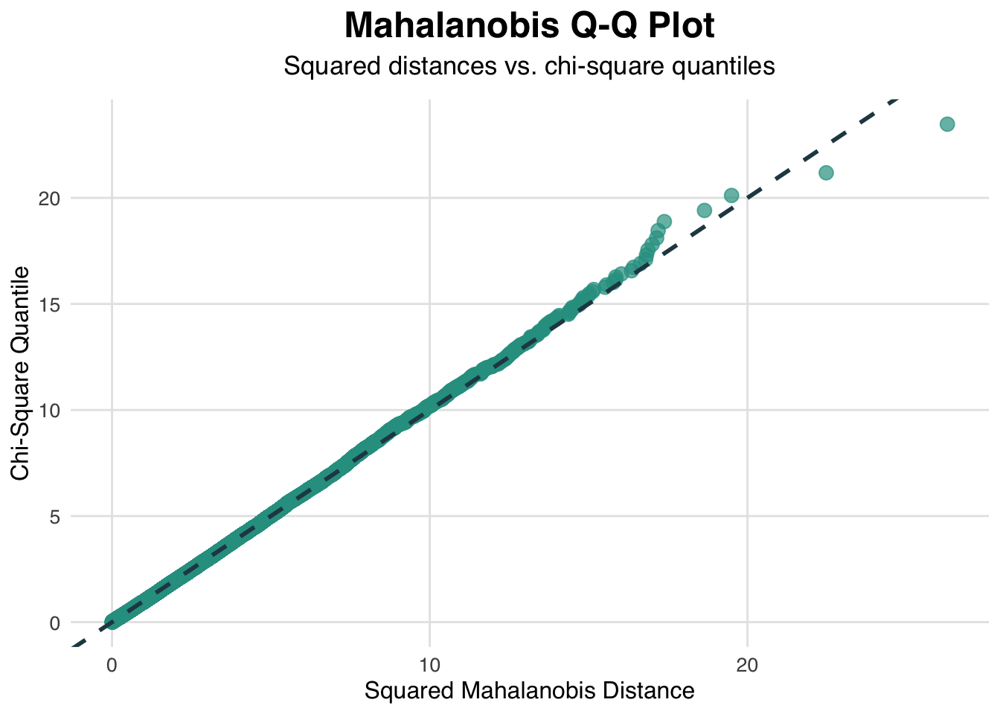
The QQ plots show that the data does not follow a straight line, indicating that the data is not multivariate normally distributed.
In this case the assumption is not met. This might be due to the large sample size. If the sample size is large, the assumption of multivariate normality can be relaxed. However, if the sample size is small, it is important to check for multivariate normality. However, for a small sample, if the assumption is not met, a form of SEM estimation can be used which does not assume multivariate normality, such as the Weighted Least Squares Mean and Variance adjusted (WLSMV) estimator or the robust estimation method (MLR). These methods are discussed below.
Checking for linearity - SEM assumes that the relationships between the variables are linear. This can be checked using scatterplots or correlation matrices. If the relationships are not linear, the data may need to be transformed or a different model may need to be used.
# Create a scatterplot matrix to check for linearitylibrary(GGally)1ggpairs(UKdata %>%select(PV1SCIE, PV1MATH, PV1READ),2lower =list(continuous =wrap("points", alpha =0.5)))
1
line 1 passes the UK data frame to the ggpairs function, selecting the variables of interest
2
line 2 specifies that the lower triangle of the scatterplot matrix should be plotted as points with some transparency (alpha = 0.5) to make it easier to see the density of points
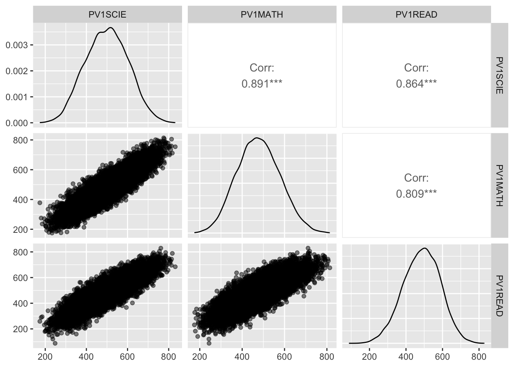
There appear to be linear relationships between the variables PV1MATH, PV1READ and PV1SCIE, but there are some outliers.
No multicollinearity - SEM assumes that the independent variables are not highly correlated. This can be checked using the Variance Inflation Factor (VIF). A VIF value greater than 10 indicates high multicollinearity.
# Load the car package to check for multicollinearitylibrary(car)# Calculate the VIF for the independent variables1vif_values <-vif(lm(PV1MATH ~ PV1SCIE + PV1READ, data = UKdata))# Print the VIF valuesvif_values
1
line 1 fits a linear model to the data, using lm, with PV1MATH as the dependent variable and PV1SCIE and PV1READ as independent variables. This is like performing a test regression analysis to check for multicollinearity before performing the SEM.
PV1SCIE PV1READ
3.940547 3.940547
A VIF value greater than 10 indicates high multicollinearity. In this case, the VIF values for PV1SCIE and PV1READ are both less than 10, indicating that there is no high multicollinearity between the independent variables.
Checking for outliers - SEM is sensitive to outliers, so it is important to check for outliers before fitting the model. This can be done using boxplots or scatterplots. If there are outliers, they may need to be removed or transformed.
# Create boxplots to check for outliersggplot(UKdata, aes(x ="", y = PV1MATH)) +geom_boxplot() +labs(title ="Boxplot of PV1MATH", x ="", y ="PV1MATH") +theme_minimal()
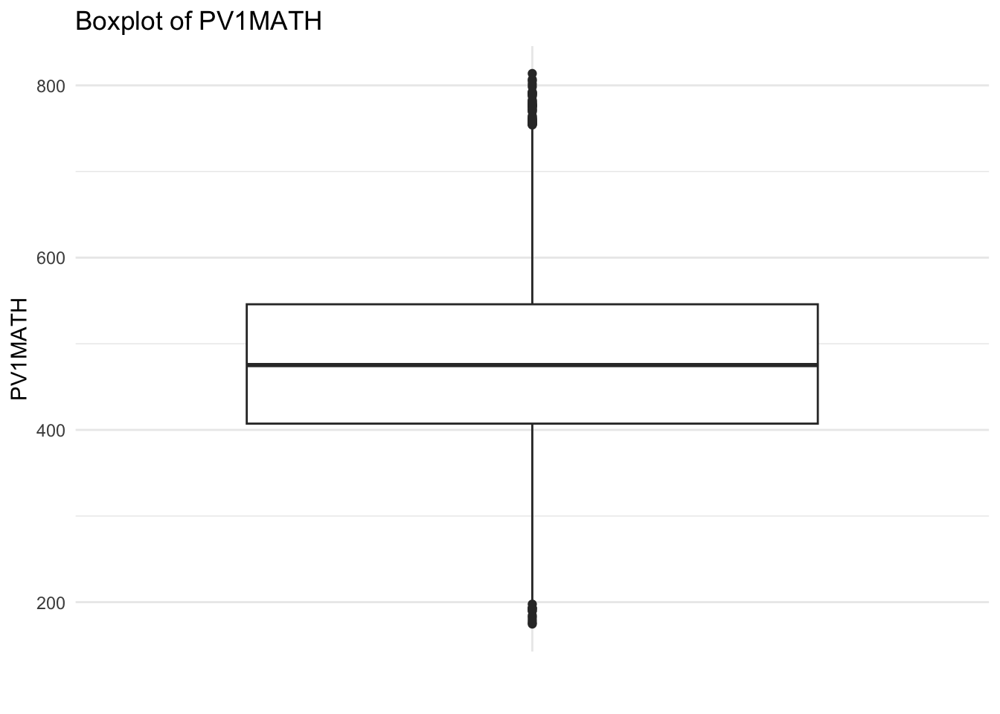
ggplot(UKdata, aes(x ="", y = PV1SCIE)) +geom_boxplot() +labs(title ="Boxplot of PV1SCIE", x ="", y ="PV1SCIE") +theme_minimal()
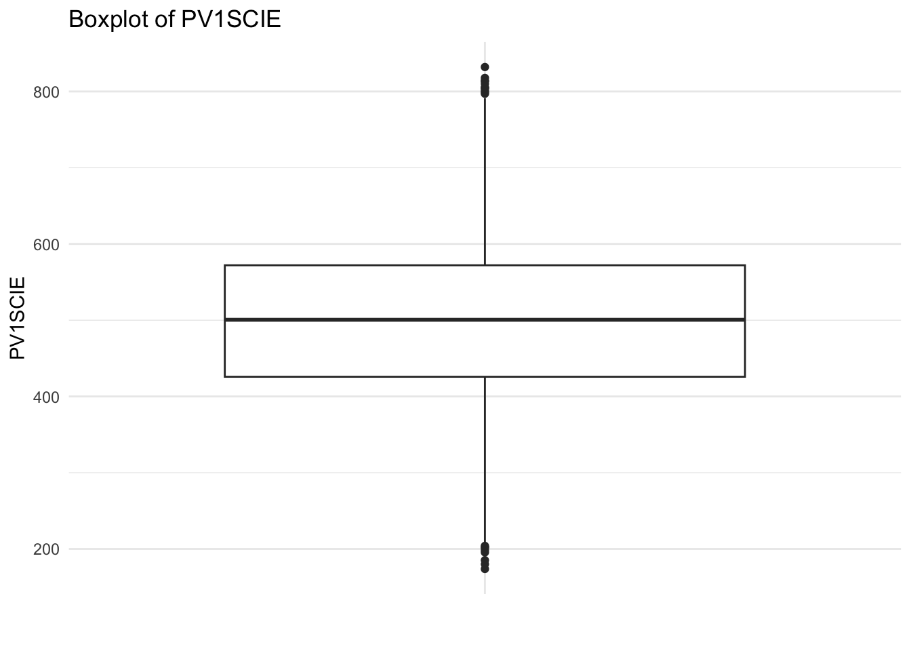
ggplot(UKdata, aes(x ="", y = PV1READ)) +geom_boxplot() +labs(title ="Boxplot of PV1READ", x ="", y ="PV1READ") +theme_minimal()
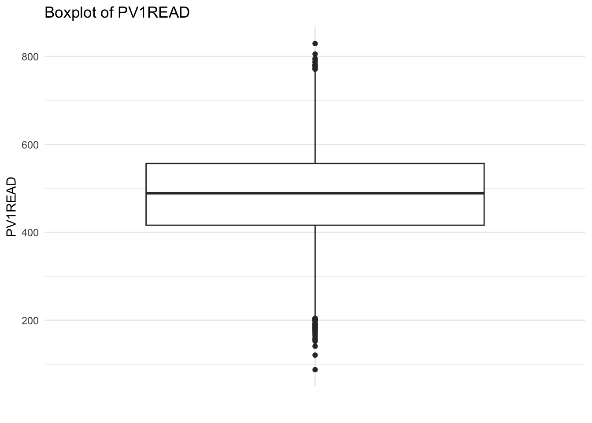
The boxplots show that there are some outliers in the data, particularly for PV1MATH and PV1SCIE. These outliers may need to be removed or transformed before fitting the SEM model.
One approach to dealing with outliers is to remove them from the data set. This can be done using the dplyr package in R. For example, to remove outliers from PV1MATH, we can use the filter function to keep only those values that are within 1.5 times the interquartile range (IQR) of the median.
# Remove outliers from PV1MATH and PV1SCIEUKdata <- UKdata %>%filter(PV1MATH > (quantile(PV1MATH, 0.25) -1.5*IQR(PV1MATH)) &1 PV1MATH < (quantile(PV1MATH, 0.75) +1.5*IQR(PV1MATH)))UKdata <- UKdata %>%filter(PV1SCIE > (quantile(PV1SCIE, 0.25) -1.5*IQR(PV1SCIE)) & PV1SCIE < (quantile(PV1SCIE, 0.75) +1.5*IQR(PV1SCIE))) ## replot box plotsggplot(UKdata, aes(x ="", y = PV1MATH)) +geom_boxplot() +labs(title ="Boxplot of PV1MATH", x ="", y ="PV1MATH") +theme_minimal()
1
line 1 uses the filter function to keep only those values of PV1MATH that are within 1.5 times the interquartile range (IQR) of the median.
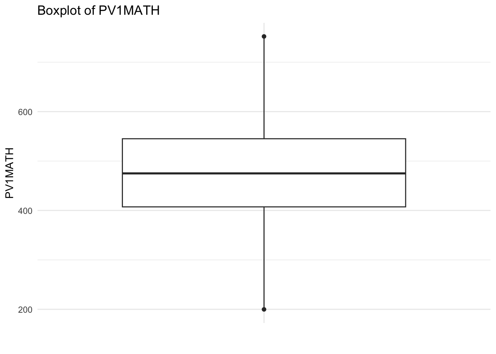
ggplot(UKdata, aes(x ="", y = PV1SCIE)) +geom_boxplot() +labs(title ="Boxplot of PV1SCIE", x ="", y ="PV1SCIE") +theme_minimal()
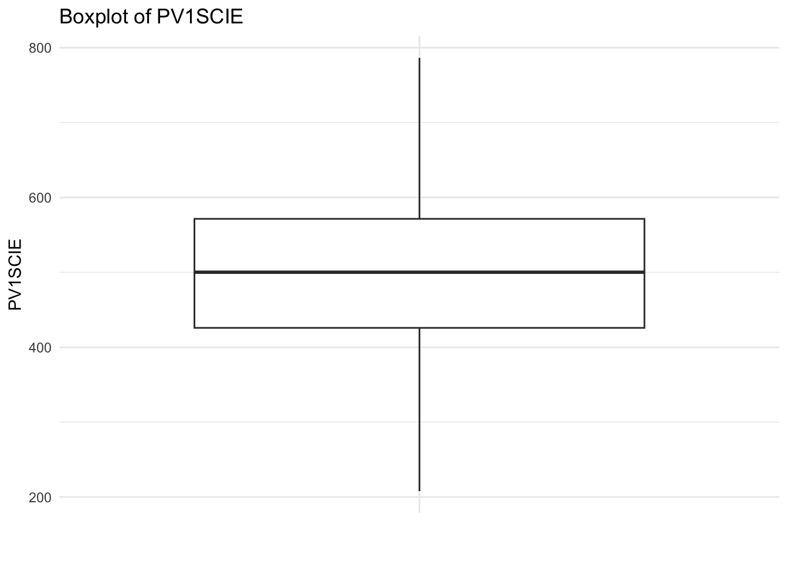
This removes the outliers from the PV1MATH variable. The same process is used to remove outliers from the PV1SCIE variable.
Checking for missing data - SEM requires complete data, so it is important to check for missing data before fitting the model. This can be done using the mice package. If there is missing data, it may need to be imputed or removed.
# Load the `mice` package to check for missing datalibrary(mice)# Check for missing data using Little's MCAR testmd.pattern(UKdata)
/\ /\
{ `---' }
{ O O }
==> V <== No need for mice. This data set is completely observed.
\ \|/ /
`-----'
In this case there are no missing data. If data were missing, the mice package could be used to impute the missing data. Imputation is the process of replacing missing data with estimated values based on the observed data. The mice package provides a number of methods for imputing missing data, including predictive mean matching, Bayesian linear regression, and others. For example, the simplest approach to imputation is to replace all missing values with the mean of the variable.
An alternative to imputation using mice is to use Full Information Maximum Likelihood (FIML) estimation, which uses all available data to estimate the model parameters without imputing missing values. FIML is implemented in the lavaan package by setting the missing argument to "FIML" when fitting the model.
The typical steps taken when fitting an SEM model are shown below (see Figure 5.1 in (Kline 2023)):
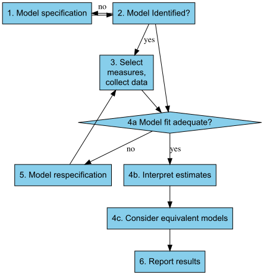
Researchers typically begin by specifying a model, that is setting out the setting out the relationships theory suggest exists between variables. Specification is an important steps as the following stages assume the model is correct. model identification is the process of determining if a model can be estimated from available data. If the model is not identified, the researcher must go back to the model specification stage and make changes. If the model is identified, the researcher can move on to collecting data. Once data are collected, the model is estimated and the fit of the model is assessed (multiple approaches to assessing model fit are discussed below). If the model does not fit the data well, the researcher may need to respecify the model. If the model fits the data well, the researcher can interpret the estimates and consider equivalent models. For any model, there may be many (perhaps infintely many) other models that fit the data equally well.Finally, the researcher reports the results.
1.2.2 A simple structural model
Researchers use SEM to determine the correlations between a number of variable in a data set. It allows the relationship between multiple variables to be taken into account.
For example, in the PISA data set, in the context of data related to UK students achievement in mathematics, a researcher might be interested in building a model of mathematics (PV1MATH) score by a number of variables in the data set, for example, reading score (PV1READ), science score (PV1SCIE), family cultural capital (the index of economic, social and cultural status: ESCS), wealth (WEALTH) and gender (ST004D01T). SEM can be used to represent the relationship between these variables and students’ mathematics achievement.
To create the SEM we will use the lavaan package - lavaan is a contraction of Latent Variable Analysis and allows us to fit a number of different SEMs to data. We will also use the semPlot package to visualise the results. The relationships between variables in SEMs are often represented as path diagrams - representations in which variables are represented as squares or circles and arrows labelled with correlation coefficients join the variables to represent the relationships.semPlot allows us to draw path diagrams.
1.3 Model Syntax
Consider the SEM introduced above - a model of the variables that impact students’ mathematics scores.
To create the SEM of UK mathematics achievement we first create a subset data.frame of UK data, UKdata.
# Load lavaan to create the SEM and semPlot to draw path diagramslibrary(lavaan)library(semPlot)# Create a subset of PISA data related to the UK containing the dependent variable of interest (PV1MATH) and the independent variables we are interested in1UKdata <- PISA_2025 %>%2select(CNT, PV1SCIE, PV1MATH, PV1READ, ESCS, HOMEPOS, ST004D01T) %>%3filter(CNT =="United Kingdom")
1
line 1 passes the whole PISA_2025 dataset and pipes it into the next line using %>%
2
line 2 selects the variables of interest
3
line 3 filters for the UK
The first step is to create the model. Models in lavaan are represented as a dependent variable y, linked to a number of independent variables x1, x2, x3, etc. The ~ symbol is the regression operator. A simple regression formula might then take the form of:
y ~ x1 + x2 + x3
To indicate a variable is a latent variable we use the =~ operator. So to define a model in which the latent variable f1 varies with three independent variables we would write:
f1 =~ x1 + x2 + x3
In some cases, the independent variables may correlate. For example, if we are investigating mathematics achievement (the dependent variable, y), by looking at the independent variables of reading (x1) and science score (x2), it may be the case that reading and science cores covary (that is changes to one impacts the other). In this case, we can specify covariance in our model by stating:
y ~ x1 + x2 The regression model x1 ~ x2 Indicating the covariance
In our case, considering UK mathematics achievement, we can set up a model that mathematics score PV1MATH varies with science score PV1SCIE, reading score PV1READ, cultural resources in the home ESCS, a wealth proxy measure, HOMEPOS: model <- "PV1MATH ~ PV1SCIE + PV1READ + ESCS + HOMEPOS"
We then pass the model, and the data.frame to the sem function: fit<-sem(model, data=UKdata, estimator = "MLR"). This produces a model as the output fit. To see the results we call summary(fit)
Note that, as the data violated the check of multivariate normality above, we need to set the estimator to "MLR" (Maximum Likelihood with Robust standard errors). This estimator does not assume multivariate normality and is robust to violations of this assumption.
line 1 specify the model - we want to model PV1MATH using PV1SCIE, PV1READ, ESCS (class proxy) and HOMEPOS (wealth proxy).
2
line 2 create the model using the fit function
3
line 3 print the model
lavaan 0.6-21 ended normally after 1 iteration
Estimator ML
Optimization method NLMINB
Number of model parameters 5
Used Total
Number of observations 13980 15546
Model Test User Model:
Standard Scaled
Test Statistic 0.000 0.000
Degrees of freedom 0 0
Parameter Estimates:
Standard errors Sandwich
Information bread Observed
Observed information based on Hessian
Regressions:
Estimate Std.Err z-value P(>|z|)
PV1MATH ~
PV1SCIE 0.722 0.007 96.626 0.000
PV1READ 0.153 0.008 20.160 0.000
ESCS 7.190 0.579 12.424 0.000
HOMEPOS -0.851 0.596 -1.429 0.153
Variances:
Estimate Std.Err z-value P(>|z|)
.PV1MATH 2013.816 23.860 84.400 0.000
In the regressions table, the function returns the value of the regression coefficients for each independent variable, and the P value (P(>|z|)). Note in the model above all the independent variables are significant, but the largest loading comes from the HOMEPOS (wealth) variable, with the science (PV1SCIE) and reading (PV1READ) scores contributing comparatively little.
Tip
In fitting a model, there are a number of approaches to estimating the model parameters. Different packages use different assumptions. To make your output match that of different SEM tools, you will need to choose the correct assumptions. For example, the default likelihood in lavaan is likelihood = "normal", which assumes multivariate normality. However, to match the output of AMOS, you would need to set the estimator to the default estimator = "ML" but the likelihood = "wishart". See the lavaan documentation for more details.
Finally, to produce a visual representation of the model, we pass our model, fit to the semPaths function (from the semPlot package we loaded above). We can specify was we want displayed on the lines, in this case the estimate of the regression coefficients between the variables.
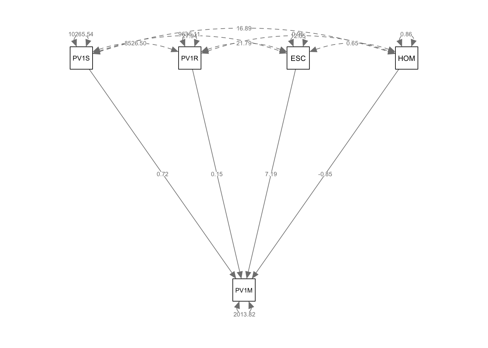
In path diagrams, directly measured variables, manifest variables, are shown as squares. Latent variables are represented as circles. Single headed arrows represent the regression effects between variables. The curved arrows starting and ending on a square or circle indicate the variances of those variables. When curved arrows start and end on different variables, they represent covariance.
One issue to note here is the difference in the variance for the science and mathematics scores. PV1SCIE, PV1READ and PV1MATH are test scores and so have a large variance (the maximum and minimum science scores, for example, are 0 and 943). The variance of the two test variables is much greater that for HOMEPOS (Min=-10.0741 mean=-0.4447, Max=15.240) and ESCS (Min=-6.841 mean=-0.310, Max=7.380).
Tip
Continuous variables in data sets may have different ranges - that this the difference between the maximum and minimum variable can have larger magnitudes for some variables than others. This can be a problem because it can be hard to compare the effects of those variables. For example, in the PISA data, consider the difference between PV1MATH (mathematics scores) and HOMEPOS (a wealth proxy). The maximum and minimum mathematics scores are 155 and 893, while the maximum and minimum wealth scores are 8.2 and -6.8. The difference in the range of the variables can make it hard to compare the effects of the variables.
To compare the effects of the variables, we can normalise (also referred to as standardising, scaling or creating z scores) the variables. Normalising the variables sets the mean of the variable to 0 and the variance to 1. This makes the variables more comparable. The scale function in R can be used to normalise variables. The scale function is used with mutate to create a new column PV1MATH_scaled in the UKdata data frame, with the math scores normalised.
line 1 normalise the maths scores about a mean of 0 with a variance of 1
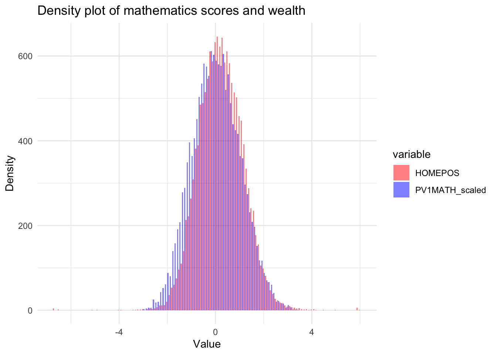
To resolve this difference, we can use the scale function to create a similar scale for PV1SCIE, PV1MATH and PV1READ. The scale function sets the mean of the variable to 0 and the variance to 1.
line 1 normalise the reading scores about a mean of 0 with a variance of 1
2
line 2 normalise maths scores
3
line 3 normalise science scores
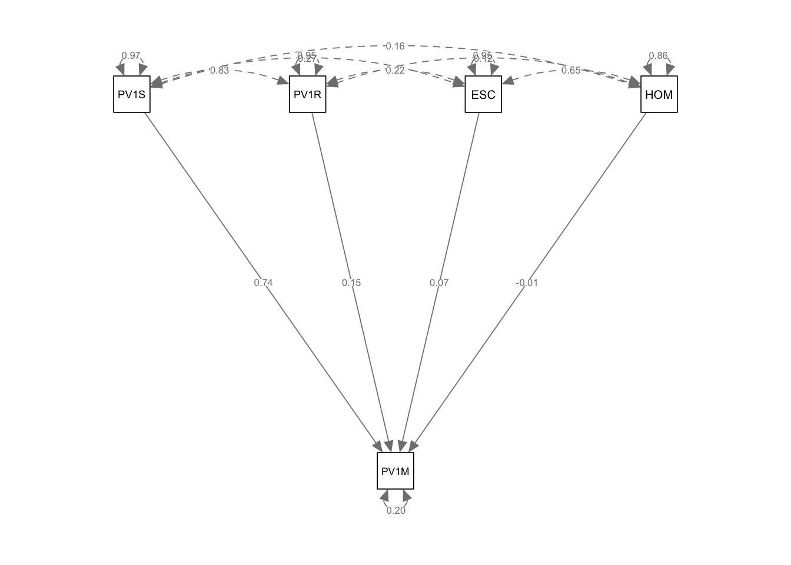
lavaan 0.6-21 ended normally after 1 iteration
Estimator ML
Optimization method NLMINB
Number of model parameters 5
Used Total
Number of observations 13980 15546
Model Test User Model:
Test statistic 0.000
Degrees of freedom 0
Parameter Estimates:
Standard errors Standard
Information Expected
Information saturated (h1) model Structured
Regressions:
Estimate Std.Err z-value P(>|z|)
PV1MATH ~
PV1SCIE 0.740 0.008 97.758 0.000
PV1READ 0.153 0.008 20.330 0.000
ESCS 0.072 0.006 12.436 0.000
HOMEPOS -0.008 0.006 -1.434 0.152
Variances:
Estimate Std.Err z-value P(>|z|)
.PV1MATH 0.200 0.002 83.606 0.000
Scaling the test scores gives a more balanced model.
Notice the curved arrow joining the outcome variable PV1M (PV1MATH) to itself. The value by the arrow represents the residual variance for PV1MATH, meaning the amount of variation in PV1MATH that is not explained by the predictors PV1SCIE (science) and PV1READ (reading). The estimate of 0.219 suggests that even after accounting for science and reading scores, there is still significant unexplained variance in mathematics scores. The high z-value (69.581) and p-value (0.000) indicate that this residual variance is statistically significant.
The curved arrows joining the predictor variables to themselves (e.g labelled 1.03 for PV1S (PV1SCIE), 1.01 for PV1R (PV1READ)) are simply the variences of those variables.
We can make the model more complex, by adding that two of our independent variables, reading (PV1READ) and science (PV1SCIE) scores may co-vary, and vary with other independent variables. That is there is a relationship between science and reading scores. The covariance is indicated by the ~~ operator.
line 1 specify the model - recall ~ is the regression operator linking dependent and independent variable and ~~ indicates two variables covary.
2
line 2 specify that reading and science scores covary using ~~
3
line 5 create the model using the fit function
4
line 6 print the model
5
line 7 use semPath to visualise the model, specifying that we want the coefficients printed on the lines whatLabels = "Estimate"
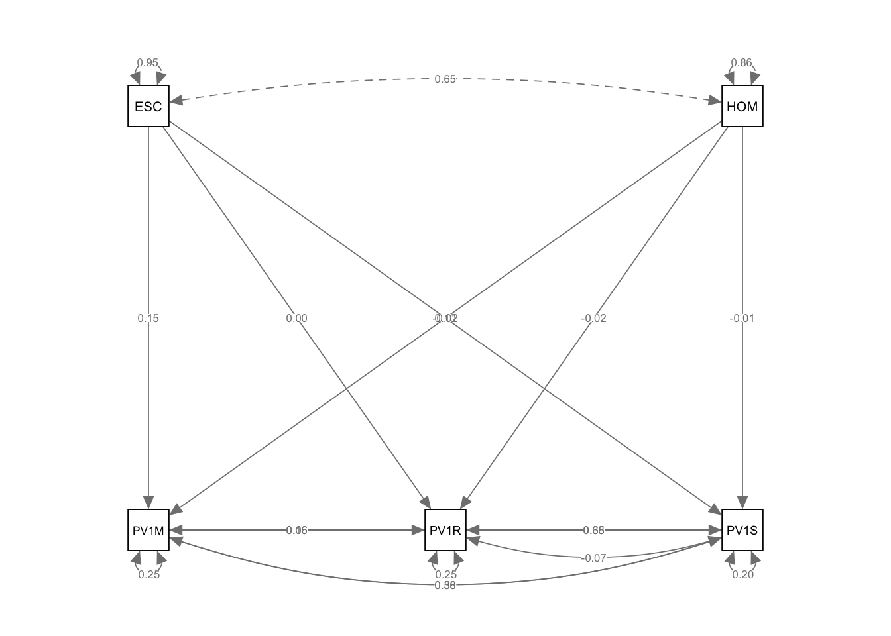
lavaan 0.6-21 ended normally after 24 iterations
Estimator ML
Optimization method NLMINB
Number of model parameters 16
Used Total
Number of observations 13980 15546
Model Test User Model:
Test statistic NA
Degrees of freedom -4
P-value (Unknown) NA
Test statistic NA
Degrees of freedom -4
P-value (Unknown) NA
Parameter Estimates:
Standard errors Sandwich
Information bread Observed
Observed information based on Hessian
Regressions:
Estimate Std.Err z-value P(>|z|)
PV1MATH ~
PV1SCIE 0.581 0.012 46.788 0.000
PV1READ 0.060 0.027 2.183 0.029
ESCS 0.149 0.007 21.821 0.000
HOMEPOS -0.024 0.007 -3.463 0.001
PV1READ ~
PV1SCIE 0.678 0.031 22.042 0.000
PV1MATH 0.156 0.031 5.066 0.000
[ reached 'max' / getOption("max.print") -- omitted 7 rows ]
Covariances:
Estimate Std.Err z-value P(>|z|)
.PV1READ ~~
.PV1SCIE -0.074 0.005 -14.839 0.000
Variances:
Estimate Std.Err z-value P(>|z|)
.PV1MATH 0.253 0.005 54.680 0.000
.PV1READ 0.247 0.003 76.777 0.000
.PV1SCIE 0.201 0.005 38.217 0.000
1.3.1 The measurement model. Modelling a latent variable
SEM typically have two parts. The measurement model, which sets out how some observed indicators (for example, items on a survey, relate to a latent variable). For example, how do the items on a questionnaire about anxiety combine to give a model of a latent variable, anxiety. The other main part of the SEM is the structural model which links the latent variables - for example how do the latent variables of anxiety and depression relate to each other.
For example, there has been much discussion of the notion of science capital, the combined effect of achievement, experiences and social networks that supports achievement and engagement with science, and progression to study and careers.
Item name
Description
PA002Q01TA
Thinking back to when your child was about 10 years old, how often would your child have done these things? - Watched TV programmes about science
PA002Q02TA
Thinking back to when your child was about 10 years old, how often would your child have done these things? - Read books on scientific discoveries
PA002Q03TA
Thinking back to when your child was about 10 years old, how often would your child have done these things? - Watched, read or listened to science fiction
PA002Q04TA
Thinking back to when your child was about 10 years old, how often would your child have done these things? - Visited web sites about science topics
PA002Q05TA
Thinking back to when your child was about 10 years old, how often would your child have done these things? - Attended a science club
PA002Q06NA
Thinking back to when your child was about 10 years old, how often would your child have done these things? - Construction play, e.g.
PA002Q07NA
Thinking back to when your child was about 10 years old, how often would your child have done these things? - Took apart technical devices
PA002Q08NA
Thinking back to when your child was about 10 years old, how often would your child have done these things? - Fixed broken objects or items, e.g. broken electronic toys
PA002Q09NA
Thinking back to when your child was about 10 years old, how often would your child have done these things? - Experimented with a science kit, electronics kit, or chemistry set, used a microscope or telescope
PA002Q13DA
Thinking back to when your child was about 10 years old, how often would your child have done these things? - Visited a science museum
1.3.2 Preparing the measurement model data
To develop a latent variable of the PA2 items, science_captial the first step is to perform a confirmatory factor analysis (here we use a confirmatory rather than an exploratory analysis as we assume existing theory already exists for the association of these items - in this case the theory of science capital (Archer et al. 2015)). First we create a data set of the needed items. We will data from Colombia as it happens to have relatively little missing data.
science_capital <- PISA_2025 %>%select( CNT, HOMEPOS, PV1SCIE, PA002Q01TA, PA002Q02TA, PA002Q03TA, PA002Q04TA, PA002Q05TA, PA002Q06NA, PA002Q07NA, PA002Q08NA, PA002Q09NA, PA002Q13DA) %>%filter(CNT =="Colombia") %>%select(-CNT) # drop country as no longer needed
As the items are currently stored as Likert responses (“Very often” “Regularly”, “Sometimes” , “Never”, NA). We need to recode to numeric values. The PA3 question have responses: “Never or hardly ever”, “Once or twice a year”, “Once or twice a month”, “Once or twice a week”, “Every day or almost every day”) and we recode to numeric. Note the TRUE ~ NA_real_ sets any missing values to NA
# recode items that start PA002 to numeric scores# note we only want to change the PA0002 columns not the others# in the data frame so use across(starts_with("PA022")) to apply# the recode to only the item columnsscience_capital <- science_capital %>%mutate(across(starts_with("PA002"),~case_when( . =="Very often"~3, . =="Regularly"~2, . =="Sometimes"~1, . =="Never"~0,TRUE~NA_real_)))
As the items are Likert scales, we will define them as ordered, so the SEM treats them as ordered rather than a continuous scale. The as.ordered function makes sure lavaan does not assume the 1s, 2s etc. we have recoded above are a continuous numeric scale.
# set PA columns to orderedscience_capital <- science_capital %>%mutate(across(starts_with("PA"), ~ordered(.)))
1.3.3 checking the measurement model data
Before fitting the confirmatory factor model, we should a) check there are acceptable levels of missingness; b) check if there are any very rare categories or categories were all responses are the same; c) check correlations are positive and reasonably substantial; d) check suitability for confirmatory analysis with a KMO and Bartlett’s test.
1.3.3.1 a) Check missingness
A high proportion of missing data can lead to the model not converging, in particular Heywood Cases.
Tip
An SEM can fail to converge on a single solution when parameter estimates come out to have negative variance, the percentage of variance an item explains is over 100%, or factor correlations over 1.0. You may see errors of the form:
WARNING: lavaan WARNING: some estimated ov variances are negativeWARNING: lavaan WARNING: some estimated lv variances are negativeWARNING: lavaan WARNING: covariance matrix of latent variables is not positive definiteWARNING: lavaan WARNING: covariance matrix of latent variables is not positive definite
Potential solutions:
check the sample size is sufficient for your model complexity - Heywood cases can arise when the sample size is too small for the model
outliers and extreme non-normality can lead to Heywood cases. Consider if there are theoretical justifications for removing outliers or using a transformation to normalise data
high missingness (even when using FIML estimation, see below` which can handle some missingness)
under-identified factors - if theoretical plausible, add more items to latent factors
over factoring - too many latent factors, especially when items load weakly, can lead to large factor variance and Heywood case.
severe multicollinearity - if items correlate too highly - reconsider measurement approach
A simple way to check for missingness is to use summarise(across(everything(), ~ mean(is.na(.x)))) which will give a proportion of missing data across columns. We use select(where(is.ordered)) to select only the Likert scale items.
The missingness across items in Colombia ranges between 6-6.7% which is seen as good for survey data. As you will see below, we can use an estimation approach which is robust to missing data (Full Information Maximum Likelihood (FIML) or Weighted Lest Squares Mean Variance (WLSMV) with pairwise deletion if modelling as ordinal indicators)
Tip
If you have higher levels of missingness - typically over 15% you should consider multiple imputation (MI). MI is a technique in which missing values are replaced with plausible estimates based on exisiting data. A popular package to peform MI in R is mice - you can read a guide to mice here
1.3.3.2 b) check item distributions
Items which do not have a balanced distribution - for example, where all responses are one item, can cause the model to not converge. A check of item distribution is therefore a good idea. A plot of item responses gives a quick visual check. To get the data into a format for plotting we need to use pivot_longer - the data starts in wide format - one column for each item. To plot it ggplot wants a single column of scores, with another column for lables (i.e. the item numbers). We can manipulate the data in this way using: pivot_longer(cols = everything(), names_to = "item", values_to = "score"). The pivot_longer() takes all the columns (cols = everything()) and stacks them on top of each other. Labelling the values score and the item names item.
Pivot all columns, renaming the item label columns items and the values, scores.
3
Plot the data, putting score on x-axis and changing colour and facetting by item
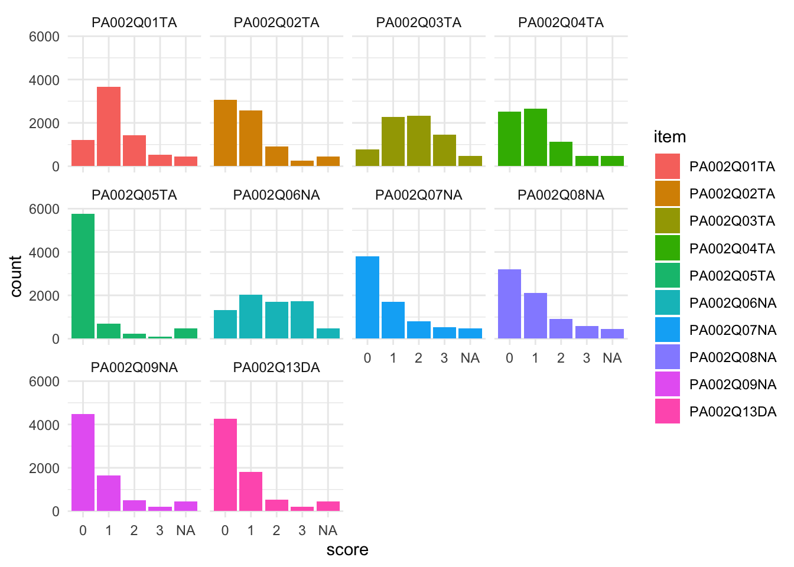
You want to look out for:
skewness or floor and ceiling effects - where the majority of responses are in the lowest category - an L-shaped or J-shaped distribution. This can inflate the χ2 fit statistics and artificially reduce standard errors.
bi-modality or multi-modality - peaks at both extremes - this might mean some populations are unobserved or items were poorly worded. The model assumes a continuous latent variable and multi-modality threatens that assumption.
sparsely populated responses - can cause non-positive definite correlation matrices and inflate standard errors
nearly all respondents pick one item - near zero variance can lead to Heywood cases - see above.
In our items there are no major problems - no zero-count categories or very skewed responses. Some items have a high number of zero counts (PA002Q05TA, PA002Q09NA, PA002Q13DA) - treating these items as ordered factors (as we will for all items) and using estimator = "WLSW" mitigates against the zero-inflation.
1.3.3.3 c) check correlations
If items are too strongly correlated (r>0.85–0.90), the items are redundant - the measure the same thing. If items are too weakly correlated (r<0.20–0.30), they have too little shared variance to make a scale. We hope for item correlations in the ideal range 0.30≤∣r∣≤0.80.
As the items report data from Likert scales, we need to use a correlation coefficient suitable for ordinal data - a polychoric correlation. We can sue the lavaan functoin lavCor() to do this.
# check item correlations# Compute polychoric correlation matrixpoly_matrix_lav <-lavCor(1object = science_capital %>%select(starts_with("PA002")),2ordered =TRUE,3missing ="pairwise")# Inspect the matrix4round(poly_matrix_lav, 2)# convert to list and sort for pairs under 0.3low_cor_list <- poly_matrix_lav %>%5as.data.frame() %>%rownames_to_column(var ="item1") %>%pivot_longer(-item1, names_to ="item2", values_to ="r") %>%6filter(item1 < item2) %>%filter(abs(r) <0.30) %>%arrange(abs(r)) low_cor_list
Some low correlation items are to be expected - they do not automatically mean an item is bad or should be rejected. What it is worth looking for is an item with low correlations with multiple other items.
# count how many times an item appears in the low correlation list1item_1_counts <- low_cor_list %>%group_by(item1) %>%count() %>%arrange(desc(n))2item_2_counts <- low_cor_list %>%group_by(item2) %>%count() %>%arrange(desc(n))3total_counts <-left_join(item_1_counts, item_2_counts,by =c("item1"="item2")) %>%mutate(n.x =as.numeric(n.x),4n.y =as.numeric(n.y)) %>%5mutate(n_tot =coalesce(n.x, 0) +coalesce(n.y, 0)) %>%select(item1, n_tot) %>%6arrange(desc(n_tot))total_counts
1
count number of items in first position in correlation pairs - item 1
2
count number of items in second position in correlation pairs - item 2
3
use left_join to combine the data frames matching item names
4
convert counts to numeric
5
add the two counts. coalesce replaces NAs with 0 so the sum works even if n.x or n.y is 0
For example, item PA002Q13DA appears on the low correlation list six times, and PA002Q03TA and PA002Q08NA 5 times. The low inter-item correlations suggest that the items may not load well onto a single factor or suggest a mult-factorial structure. We will retain the items for now and check their factor loadings when we fit the CFA. If items then exhibit low loading (λ < 0.30), we can run a test of reliability (for example McDonald’s omega) and if removing them improves overal scale reliability, drop them.
1.3.3.4 d) Run Kaiser-Meyer-Olkin and Barlett’s test
The final checks investigate where items hang together well enough to form a coherent factor structure (Kaiser-Meyer-Olkin (KMO) Test) and if factors are entirely unrelated (Bartlett’s test).
The KMO Test it compares observed correlation coefficients with partial correlation coefficients (i.e. correlation coefficients controlling for other variables). For a good factor structure, items should be well correlated with each other, but when the rest of the item pool is controlled for, the correlation between any pair should drop to zero. If the KMO value is too low, items do not hang together well enough to propose a factor structure. (NB: as ever, with larger samples, p is very likely to be <0.01 due to high power and the effect size, the KMO score is worth looking at. KMO = 1.0-0.9 - “Marvellous”; KMO = 0.89-0.8 - “Meritorious/Good”; KMO = 0.79-0.70 - “Middling/ Good”; KMO = 0.69-0.6 - “Mediocre”; KMO < 0.6 - “Unacceptable” (Nkansah 2018)).
Bartlett’s test compares the correlation matrix to an identity matrix (that is a matrix of 1s on the diagnonal but otherwise 0). That would mean items only correlated with themselves and no other items (meaning no factor structure could be constructed). The null hypothesis of Bartlett’s test is that the correlation matrix is an identity matrix - therefore the desirable result here is p < 0.05.
We can use the KMO() and cortest.bartlett functions from the psych library. Both run on the polychoric correlation matrix we made above.
Score here are between 0.76-0.90 ranging from good/middling to Marvellous.
# run Barltett's test# the test function cortest.bartlett needs to be passed the sample ncortest.bartlett(poly_matrix_lav, n =nrow(science_capital))
$chisq
[1] 22610.74
$p.value
[1] 0
$df
[1] 45
The p-value here is 0 - which might be expected with a large sample. That suggests the matrix differs from an identity matrix. In this case, we can just interpret the p-value as the test statistic is directly proportional to the sample size. However, in large samples, the correlation matrix is very likely to be different from an identiy matrix, and it is recommended on relies entirely on the KMO (Rules 1974).
1.3.4 Performing the confirmatory factor analysis
We then perform a confirmatory factor analysis. We will first see if there is a cluster of variables related to hands on technical experiences:
PA002Q05 — science club PA002Q06 — construction PA002Q07 — taking apart devices PA002Q08 — fixing things PA002Q09 — science/electronics kits
The confirmatory factor analysis checks the extent to which the items load on a proposed latent variable hands_on_science_capital. We use the operator =~ in lavaan. We first specify the confirmatory factor model - defining the latent variable hands_on_science_capital from the five hands-on indicators.
# define the model of the cfa - naming the latent variable# and defining the itemscfa_model <-" hands_on_science_capital =~ PA002Q05TA + PA002Q06NA + PA002Q07NA + PA002Q08NA + PA002Q09NA"
The confirmatory factor analysis model is then fit with the lavaan’s cfa function. We pass the model specification, the data set, specify an estimator and indicate that the data are ordered.
There are a number of different SEM estimators available in lavaan.
Estimator
Full name
lavaan argument
Typical data
When to use
Key point
ML
Maximum Likelihood
estimator = "ML"
Continuous, approximately normal
Standard SEM/CFA with continuous variables and reasonably normal data
Conventional maximum likelihood estimation
MLR
Maximum Likelihood with Robust standard errors
estimator = "MLR"
Continuous, potentially non-normal
Continuous variables where skewness/kurtosis is a concern
Provides robust standard errors and a scaled test statistic
WLSMV
Weighted Least Squares Mean and Variance adjusted
estimator = "WLSMV"
Ordinal/categorical
Likert-type indicators or other categorical variables
Common choice for ordinal CFA/SEM; robust to non-normality
DWLS
Diagonally Weighted Least Squares
estimator = "DWLS"
Ordinal/categorical
Ordinal indicators, particularly when computational efficiency matters
Uses a diagonal weight matrix; closely related to WLSMV
ULSMV
Unweighted Least Squares Mean and Variance adjusted
estimator = "ULSMV"
Ordinal/categorical
Ordinal data where a robust test statistic is required
Unweighted least squares with mean/variance adjustment
Here we use WLSMV the Weighted Least Squares Mean and Variance adjusted estimator which works for ordinal indicators (as in our Likert scales) and is robust to non-normality.
# fitting the cfa - we pass the data and set the appropriate estimator for ordinal data # here WLSMV - then we tell the model that all the items are ordinalfit_cfa <-cfa(cfa_model,data = science_capital,estimator ="WLSMV",ordered =names(science_capital))
After running the model, just like with other models, we can use summary(). To get detailed the results of the CFA, we add fit.measures = TRUE, which adds some measures of model fit, discussed below, and standardized = TRUE which adds standardised parameter estimates. Factors loadings can be reported in an unstandardised form - for example, a item loads at 0.72 - but the loading then depends on the scale that item was measured on. We have standardised all items, but it is good to practice to add the parameter here so that all loadings can be interpreted in the same way. When the flag is added, an item loading of, for example:
PA002Q05TA 0.83
Can be read as A one standard deviation increase increase in the latent factor is associated with a 0.81 standard deviation increase in the observed item.
# print the model output, including fit measures and standardized coefficientssummary(fit_cfa, fit.measures =TRUE, standardized =TRUE)
lavaan 0.6-21 ended normally after 24 iterations
Estimator DWLS
Optimization method NLMINB
Number of model parameters 20
Used Total
Number of observations 6656 7268
Model Test User Model:
Standard Scaled
Test Statistic 320.075 495.051
Degrees of freedom 5 5
P-value (Unknown) NA 0.000
Scaling correction factor 0.647
Shift parameter 0.280
simple second-order correction
Model Test Baseline Model:
Test statistic 11391.375 9213.835
Degrees of freedom 10 10
P-value NA 0.000
Scaling correction factor 1.237
User Model versus Baseline Model:
Comparative Fit Index (CFI) 0.972 0.947
Tucker-Lewis Index (TLI) 0.945 0.894
Robust Comparative Fit Index (CFI) 0.864
Robust Tucker-Lewis Index (TLI) 0.727
Root Mean Square Error of Approximation:
RMSEA 0.097 0.121
90 Percent confidence interval - lower 0.088 0.112
90 Percent confidence interval - upper 0.107 0.131
P-value H_0: RMSEA <= 0.050 0.000 0.000
P-value H_0: RMSEA >= 0.080 0.999 1.000
Robust RMSEA 0.191
90 Percent confidence interval - lower 0.177
90 Percent confidence interval - upper 0.207
P-value H_0: Robust RMSEA <= 0.050 0.000
P-value H_0: Robust RMSEA >= 0.080 1.000
Standardized Root Mean Square Residual:
SRMR 0.074 0.074
Parameter Estimates:
Parameterization Delta
Standard errors Robust.sem
Information Expected
Information saturated (h1) model Unstructured
Latent Variables:
Estimate Std.Err z-value P(>|z|) Std.lv
hands_on_science_capital =~
PA002Q05TA 1.000 0.493
PA002Q06NA 0.937 0.042 22.222 0.000 0.462
PA002Q07NA 1.701 0.067 25.401 0.000 0.839
PA002Q08NA 1.548 0.061 25.380 0.000 0.764
Std.all
0.493
0.462
0.839
0.764
[ reached 'max' / getOption("max.print") -- omitted 1 row ]
Thresholds:
Estimate Std.Err z-value P(>|z|) Std.lv Std.all
PA002Q05TA|t1 1.035 0.019 55.157 0.000 1.035 1.035
PA002Q05TA|t2 1.661 0.026 63.431 0.000 1.661 1.661
PA002Q05TA|t3 2.186 0.040 54.754 0.000 2.186 2.186
PA002Q06NA|t1 -0.856 0.018 -48.641 0.000 -0.856 -0.856
PA002Q06NA|t2 -0.015 0.015 -0.981 0.327 -0.015 -0.015
[ reached 'max' / getOption("max.print") -- omitted 10 rows ]
Variances:
Estimate Std.Err z-value P(>|z|) Std.lv Std.all
.PA002Q05TA 0.757 0.757 0.757
.PA002Q06NA 0.786 0.786 0.786
.PA002Q07NA 0.296 0.296 0.296
.PA002Q08NA 0.417 0.417 0.417
.PA002Q09NA 0.660 0.660 0.660
[ reached 'max' / getOption("max.print") -- omitted 1 row ]
When looking at the summary. There are a number of things we should check including factor loadings and model fit indicators. First we check, if item loadings are sufficiently strong. Typical cut offs for standardised loadings are:
Standardised Loading
Interpretation
<.30
Weak
.30-.40
Marginal
.40-.50
Moderate /Acceptable
.50-.60
Good.
>.70
Strong
Looking at Std.all all factor loading are generally strong. PA002Q06NA (Construction play) at .463 is the weakest, but even that is around the commonly used .40 threshold.
The model fit can then be judged on four indicators:
CFI (Comparative Fit Index): Compares the proposed model with a baseline model. Higher values indicate better fit. Rough guidelines: ≥ .95 = good fit; ≥ .90 = acceptable fit.
TLI (Tucker–Lewis Index): Similar to CFI but penalises model complexity more strongly. Higher values indicate better fit. Rough guidelines: ≥ .95 = good fit; ≥ .90 = acceptable fit.
RMSEA (Root Mean Square Error of Approximation): Measures how well the model approximates the population covariance structure, accounting for model complexity. Lower values indicate better fit. Rough guidelines: ≤ .05 = good fit; .05–.08 = acceptable; .08–.10 = poor; > .10 = very poor.
SRMR (Standardized Root Mean Square Residual): Measures the average difference between observed and model-implied correlations. Lower values indicate better fit. Rough guidelines: ≤ .05 = good fit; ≤ .08 = acceptable fit; > .08 = poor fit.
For our model:
Measure
Robust value
Interpretation
CFI
.949
Very close to .95
TLI
.898
Around .90
RMSEA
.144
Poor fit
SRMR
.077
Acceptable
The model only has 5 degrees of freedom (see the model output - we have 5 observed ordinal variances) so the RMSEA value can be over sensitive and, given the other relatively strong values SRMR (.046) and robust RMSEA (.144), can be ignored. Given the reasonable scale, we can now move on from the measurement model to the structural model.
1.3.5 Fitting the structural model
Then we run the model using sem in the same way as above, and plot the model using semPaths.
# Run the full model - we define both the latent variable (the measurement model)# and the structural model# For a latent variable# =~ means a latent variablesem_model <-"1 hands_on_science_capital =~ PA002Q05TA + PA002Q06NA + PA002Q07NA + PA002Q08NA + PA002Q09NA2 PV1SCIE ~ hands_on_science_capital + HOMEPOS"# Then fit the model, giving the estimator# Note in the full data set, we have to use across(starts_with()) to# indicate the ordinal itemsfit_sem <-sem( sem_model,data = science_capital,estimator ="WLSMV",ordered =names( science_capital %>%3select(starts_with("PA"))))summary(fit_sem, fit.measures =TRUE, standardized =TRUE, rsquare =TRUE)
1
specify the latent variable using =~ this gives the measurement model.
2
specify the structural model - we predict science score based on science capital and wealth (HOMEPOS)
3
fit the model, again using the WLSMV estimator for ordinal variables, and indicating the ordered nature of the data - note the ordered is only applied to the PA items
lavaan 0.6-21 ended normally after 96 iterations
Estimator DWLS
Optimization method NLMINB
Number of model parameters 24
Used Total
Number of observations 6501 7268
Model Test User Model:
Standard Scaled
Test Statistic 1135.200 1262.445
Degrees of freedom 14 14
P-value (Unknown) NA 0.000
Scaling correction factor 0.901
Shift parameter 1.962
simple second-order correction
Model Test Baseline Model:
Test statistic 11351.438 9233.033
Degrees of freedom 15 15
P-value NA 0.000
Scaling correction factor 1.230
User Model versus Baseline Model:
Comparative Fit Index (CFI) 0.901 0.865
Tucker-Lewis Index (TLI) 0.894 0.855
Robust Comparative Fit Index (CFI) NA
Robust Tucker-Lewis Index (TLI) NA
Root Mean Square Error of Approximation:
RMSEA 0.111 0.117
90 Percent confidence interval - lower 0.106 0.112
90 Percent confidence interval - upper 0.117 0.123
P-value H_0: RMSEA <= 0.050 0.000 0.000
P-value H_0: RMSEA >= 0.080 1.000 1.000
Robust RMSEA NA
90 Percent confidence interval - lower NA
90 Percent confidence interval - upper NA
P-value H_0: Robust RMSEA <= 0.050 NA
P-value H_0: Robust RMSEA >= 0.080 NA
Standardized Root Mean Square Residual:
SRMR 0.072 0.072
Parameter Estimates:
Parameterization Delta
Standard errors Robust.sem
Information Expected
Information saturated (h1) model Unstructured
Latent Variables:
Estimate Std.Err z-value P(>|z|) Std.lv
hands_on_science_capital =~
PA002Q05TA 1.000 0.474
PA002Q06NA 0.972 0.046 21.135 0.000 0.461
PA002Q07NA 1.767 0.074 23.874 0.000 0.838
PA002Q08NA 1.627 0.068 23.863 0.000 0.772
Std.all
0.474
0.461
0.838
0.772
[ reached 'max' / getOption("max.print") -- omitted 1 row ]
Regressions:
Estimate Std.Err z-value P(>|z|) Std.lv Std.all
PV1SCIE ~
hnds_n_scnc_cp 14.823 2.581 5.743 0.000 7.031 0.079
HOMEPOS 30.752 0.924 33.282 0.000 30.752 0.385
Intercepts:
Estimate Std.Err z-value P(>|z|) Std.lv Std.all
.PV1SCIE 468.106 1.490 314.077 0.000 468.106 5.247
Thresholds:
Estimate Std.Err z-value P(>|z|) Std.lv Std.all
PA002Q05TA|t1 0.878 0.028 31.476 0.000 0.878 0.878
PA002Q05TA|t2 1.516 0.034 44.927 0.000 1.516 1.516
PA002Q05TA|t3 2.040 0.047 43.616 0.000 2.040 2.040
PA002Q06NA|t1 -1.193 0.026 -46.319 0.000 -1.193 -1.193
PA002Q06NA|t2 -0.323 0.023 -14.156 0.000 -0.323 -0.323
[ reached 'max' / getOption("max.print") -- omitted 10 rows ]
Variances:
Estimate Std.Err z-value P(>|z|) Std.lv Std.all
.PA002Q05TA 0.775 0.775 0.775
.PA002Q06NA 0.787 0.787 0.787
.PA002Q07NA 0.297 0.297 0.297
.PA002Q08NA 0.404 0.404 0.404
.PA002Q09NA 0.672 0.672 0.672
[ reached 'max' / getOption("max.print") -- omitted 2 rows ]
R-Square:
Estimate
PA002Q05TA 0.225
PA002Q06NA 0.213
PA002Q07NA 0.703
PA002Q08NA 0.596
PA002Q09NA 0.328
PV1SCIE 0.154
When getting an SEM output, the first thing to look at is the model fit indicators. In this case:
Measure
Robust value
Interpretation
CFI
.965
Good
TLI
.963
Good
RMSEA
.084
Borderline
SRMR
.050
Good
This looks like a relatively good fit, overall. The RMSEA is slightly higher than we would like.
Second we cna look at our coefficients, and as above, looking at the standardized coefficients makes for easier comparison.
Predictor
Std. β
p
Hands-on science capital
.052
0.06
HOMEPOS
.103
< .001
Hands-on science capital seems to have a statistically signficant, but small association with science achievement (even when wealth is controlled for). Wealth (HOMEPOS) has a stronger positive association of .103 with science achievement.
Next, we look at the R^2 of the model (0.013) - the model only explains 0.13% of variance in science achievement. Finally, it is worth checking the factor loadings in the measurement model:
Item
Std. loading
R²
Q05 science club
.639
.408
Q06 construction
.458
.210
Q07 taking apart devices
.880
.774
Q08 fixing objects
.813
.660
Q09 experimenting
.721
.520
The parameters here are similar to the CFA which is pleasing. We could report the model in a paper like this:
The SEM has generally good fit (CFI = .965, TLI = .963, SRMR = .050), although RMSEA is somewhat elevated (.084). Hands-on science capital is positively associated with science achievement after controlling for HOMEPOS (standardized β = .052, p = .006), but the overall model explains only 1.3% of the variance in science achievement.
1.3.6 Formatting path diagrams
Once we have both a measurement and structural model, we can use the semPlot pacakage to produce a path diagram. For example, the simplest way to produce a plot from the model above is to use the semPaths() function. That doesn’t give a particularly attractive initial plot:
# plot a simple path diagramsemPaths(fit_sem)
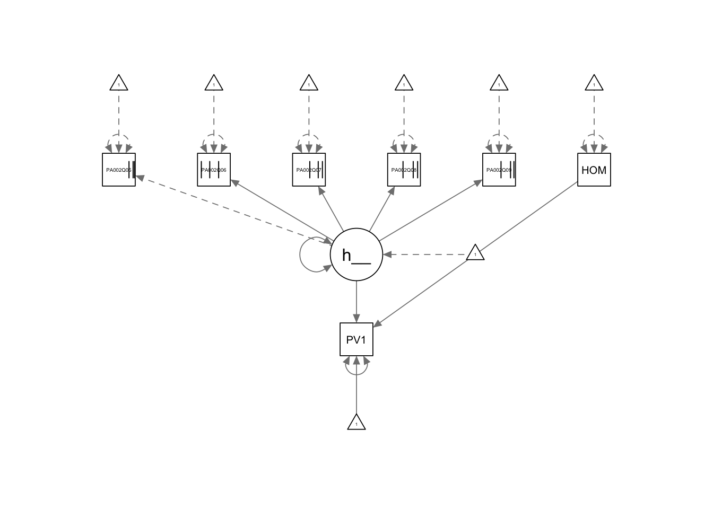
Triangles have appeared which represent the threshold for the ordinal variable. A threshold in SEM refers to the value that defines the boundary between categories of an ordinal variable - in this case the variable PA002Q05TA in the data represents Likert responses, Very often = 3, “Regularly” - 2, “Sometimes” = 1, “Never” = 0,
The bars on the squares are visual markers that indicate which variables are being treated as ordinal variables in the model. In this case, as we used the as.ordered() function on the PA variables, they appear with bars, indicating they are not continuous variable but an ordinal one.
Tip
In your plot, triangles are the observed-variable intercepts/means. If adding an ordinal variable, with the addition of triangles to the plot, makes your path diagram too crowded, you can turn off estimates for thresholds, intercepts and residual variances as follows:
# plot a path diagram without observed-variable intercepts/means. and thresholdssemPaths(fit_sem,residuals =FALSE, intercepts =FALSE,thresholds =FALSE)
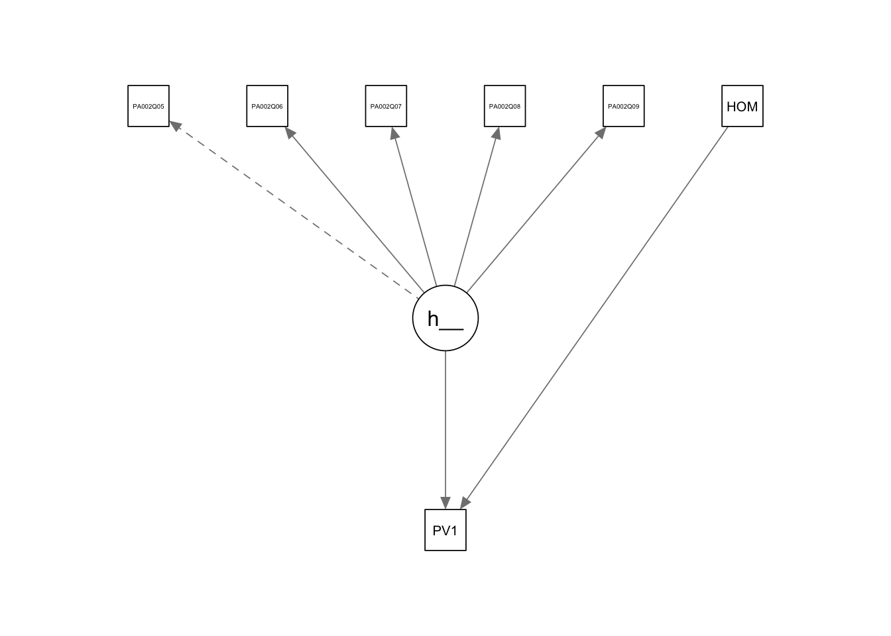
On the plot above, there are not coefficients on the paths. You can use whatLabels = "Estimate" to turn on the coefficients.
To give longer node names (nodeNames=nodenames), and you can increase the abbreviation of labels to a set number of characters in the nodes using nCharNodes = 3. node.label.cex sets the size of the node label text:
The semPaths() formatting control parameters are summarised below:
semPaths(object = fit_sem, # Your fitted lavaan, object# ------------------------------------------------------------------# Display (Estimates & Labels)# ------------------------------------------------------------------whatLabels ="std", # Values printed on arrows ("est", "std", "name", "label", "par") digits =2, # Number of decimal places for numeric path estimates# ------------------------------------------------------------------# Variable appearance# ------------------------------------------------------------------ label.cex =1.2, # Font size for text insider the nodes label.color ="black", # Text color inside the nodes label.prop =0.9, # Proportion of node size used for text before auto-scaling nodeLabels =NULL, # Custom character vector of labels (e.g., c("Resil", "Math")) nCharNodes =0, # Max characters before truncating labels (0 = no limit)# ------------------------------------------------------------------# Node sizing and shape# ------------------------------------------------------------------ sizeMan =10, # Width/size of manifest (observed) variables (rectangles) sizeMan2 =5, # Height of manifest variable rectangles sizeLat =12, # Width/size of latent variables (circles/ellipses) sizeLat2 =8, # Height of latent variables shapeMan ="rectangle", # Shape for manifest vars ("rectangle", "square", "ellipse") shapeLat ="ellipse", # Shape for latent vars ("ellipse", "circle")# ------------------------------------------------------------------# Path / edge / arrow appearance# ------------------------------------------------------------------ edge.label.cex =1.0, # Font size for coefficients printed ON arrows edge.label.color ="black", # Colour of coefficient text on arrows edge.color ="black", # Colour of arrow lines edge.width =1.5, # Base thickness of arrow lines asymmetric =FALSE, # TRUE forces all paths to be drawn as directional single arrows# ------------------------------------------------------------------# Layout and orientation# ------------------------------------------------------------------ layout ="tree2", # Diagram layout ("tree", "tree2", "circle", "spring", "circle2") rotation =2, # Diagram orientation: 1 = Top-Down, 2 = Left-to-Right, 3= Bottom-Up, 4= Right-to-Left mar =c(3, 3, 3, 3), # Outer margins around plot: c(bottom, left, top, right)# ------------------------------------------------------------------# Toggle elements# ------------------------------------------------------------------ residuals =FALSE, # Show/hide residual variances (error loops) intercepts =FALSE, # Show/hide mean intercepts (triangles) thresholds =FALSE, # Show/hide factor threshold lines (for ordinal data) fixedExo =FALSE, # FALSE forces exogenous covariates (like gender/ESCS) to be plotted cardinal =TRUE, # TRUE forces arrows to connect at 90-degree cardinal points of nodes# ------------------------------------------------------------------# Colour# ------------------------------------------------------------------ groups ="latents", # Group nodes by type ("latents", "manifests")for colouring color =list(latents ="lightblue", man ="white") # Fill colours for nodes)
Tip
You can find more information on formatting path diagrams using semPaths on semptools and on the Comprehensive R Archive network (CRAN) documentation for the package.
1.4 Fitting categorical variables
To fit a categorical variable like gender, you can use the as.factor function to convert the variable to a factor and then use the fit <- sem(model, UKdata, estimator = "MLR") function to estimate the model. MLR is the default estimator for categorical variables. MLR stands for Maximum Likelihood Robust. It is an estimator used in structural equation modelling (SEM), particularly when dealing with non-normal data or small sample sizes. See the example below using gender:
# Create a data frame with the required base variablesUKdata<-PISA_2025 %>%select(CNT, PV1SCIE, PV1MATH, ST004D01T) %>%filter(CNT =="United Kingdom") %>%na.omit() # Remove the NAs to create a two level variable.# set ST004D01T to a factorUKdata$ST004D01T <-factor(UKdata$ST004D01T, levels =c("Male", "Female"))# Scale the numeric variablesUKdata <- UKdata %>%mutate(PV1SCIE =scale(PV1SCIE),PV1MATH =scale(PV1MATH))# Create the modelmodel <-"PV1SCIE ~ PV1MATH + ST004D01T"fit <-sem(model, data = UKdata, estimator ="MLR")summary(fit)
lavaan 0.6-21 ended normally after 1 iteration
Estimator ML
Optimization method NLMINB
Number of model parameters 3
Number of observations 15546
Model Test User Model:
Standard Scaled
Test Statistic 0.000 0.000
Degrees of freedom 0 0
Parameter Estimates:
Standard errors Sandwich
Information bread Observed
Observed information based on Hessian
Regressions:
Estimate Std.Err z-value P(>|z|)
PV1SCIE ~
PV1MATH 0.896 0.003 256.941 0.000
ST004D01T 0.113 0.007 15.478 0.000
Variances:
Estimate Std.Err z-value P(>|z|)
.PV1SCIE 0.204 0.002 86.913 0.000
semPaths(fit, whatLabels ="Estimate")
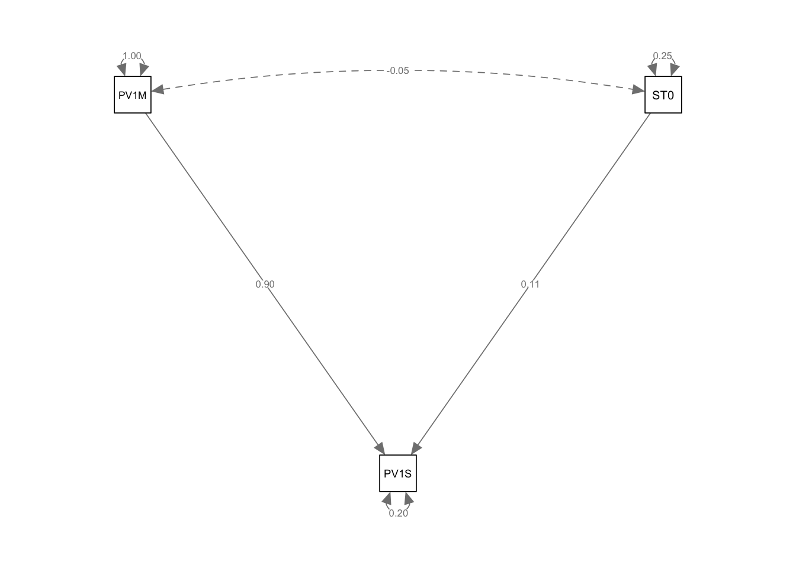
Tip
If you have both categorical and ordinal variables, it’s best to use WLSMV because it can appropriately handle both ordinal variables (using thresholds) and categorical variables (using multinomial logistic regression), while also providing correct standard errors.
1.5 Labelling paths to calculate indirect effects
In SEM, indirect effects occur when the effect of one variable on another is mediated through one or more intervening variables. To calculate indirect effects in lavaan, you need to label the paths in your model using the label argument. This allows you to specify which paths you want to include in the calculation of indirect effects.
For example, consider a model where variable PV1MATH (math score) affects variable PV1SICE (science score) through a mediator variable HOMEPOS (wealth). We add coefficients to the paths using labels a, b and c, and then define the indirect effect as the product of the paths a and c. Note we use the operator := to define the indirect effect.
# Create a data frame with the required variablesUKdata <- PISA_2025 %>%select(CNT, HOMEPOS, PV1MATH, PV1SCIE) %>%filter(CNT =="United Kingdom") model <-" PV1SCIE ~ a*PV1MATH + b*HOMEPOS HOMEPOS ~ c*PV1MATH # Indirect effect indirect_effect := a * c"fit <-sem(model, data = UKdata, estimator ="MLR")summary(fit, standardized =TRUE, fit.measures =TRUE)
lavaan 0.6-21 ended normally after 1 iteration
Estimator ML
Optimization method NLMINB
Number of model parameters 5
Used Total
Number of observations 14879 15546
Model Test User Model:
Standard Scaled
Test Statistic 0.000 0.000
Degrees of freedom 0 0
Model Test Baseline Model:
Test statistic 23924.377 21415.763
Degrees of freedom 3 3
P-value 0.000 0.000
Scaling correction factor 1.117
User Model versus Baseline Model:
Comparative Fit Index (CFI) 1.000 1.000
Tucker-Lewis Index (TLI) 1.000 1.000
Robust Comparative Fit Index (CFI) NA
Robust Tucker-Lewis Index (TLI) NA
Loglikelihood and Information Criteria:
Loglikelihood user model (H0) -98300.354 -98300.354
Loglikelihood unrestricted model (H1) -98300.354 -98300.354
Akaike (AIC) 196610.708 196610.708
Bayesian (BIC) 196648.747 196648.747
Sample-size adjusted Bayesian (SABIC) 196632.857 196632.857
Root Mean Square Error of Approximation:
RMSEA 0.000 NA
90 Percent confidence interval - lower 0.000 NA
90 Percent confidence interval - upper 0.000 NA
P-value H_0: RMSEA <= 0.050 NA NA
P-value H_0: RMSEA >= 0.080 NA NA
Robust RMSEA 0.000
90 Percent confidence interval - lower 0.000
90 Percent confidence interval - upper 0.000
P-value H_0: Robust RMSEA <= 0.050 NA
P-value H_0: Robust RMSEA >= 0.080 NA
Standardized Root Mean Square Residual:
SRMR 0.000 0.000
Parameter Estimates:
Standard errors Sandwich
Information bread Observed
Observed information based on Hessian
Regressions:
Estimate Std.Err z-value P(>|z|) Std.lv Std.all
PV1SCIE ~
PV1MATH (a) 0.910 0.004 243.297 0.000 0.910 0.887
HOMEPOS (b) 1.173 0.423 2.770 0.006 1.173 0.011
HOMEPOS ~
PV1MATH (c) 0.002 0.000 24.547 0.000 0.002 0.201
Variances:
Estimate Std.Err z-value P(>|z|) Std.lv Std.all
.PV1SCIE 2212.324 26.013 85.046 0.000 2212.324 0.209
.HOMEPOS 0.849 0.014 59.111 0.000 0.849 0.960
Defined Parameters:
Estimate Std.Err z-value P(>|z|) Std.lv Std.all
indirect_effct 0.002 0.000 24.423 0.000 0.002 0.178
semPaths(fit, whatLabels ="Estimate")
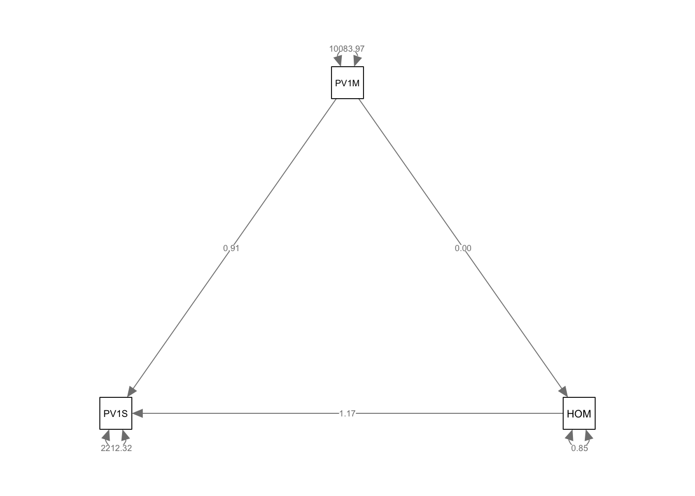
In this example, the paths from PV1MATH to PV1SCIE and from PV1MATH to HOMEPOS are labeled as a and c, respectively. The indirect effect of PV1MATH on PV1SCIE through HOMEPOS is then calculated as the product of these two paths (indirect_effect := a * c). Here we find the coefficient for the indirect effect is only 0.003, indicating a very small indirect effect of mathematics score on science score through wealth.
1.6 Estimating model fit
After running a SEM, it is important to determine how well the model fits the data. There are a number of different measures of model fit, no one measure provides a definitive measure of the fit - it is best practice to consider a number of different indicators and come to a holistic judgement. Measures include:
The Chi-Square Test of Model Fit Assume the null hypothesis that the model fits the data well. A non-significant p-value indicates good fit. However, this test is sensitive to sample size, and with large samples, even minor deviations may be significant: ‘[Chi-square] is sensitive to sample size because as sample size increases (generally above 200), the χ2 has a tendency to indicate a significant probability level’ (Schumacker and Lomax 2004, 92).
Comparative Fit Index (CFI) and Tucker-Lewis Index (TLI) Values closer to 1 indicate better fit. Common thresholds for the two indicies are Acceptable fit: > 0.90 Good fit: > 0.95 (Kline 2023, 204; McDonald and Ho 2002)
Root Mean Square Error of Approximation (RMSEA) A measure of approximate fit in the population. Common thresholds: Good fit: < 0.06 Acceptable fit: < 0.08 Look at the 90% confidence interval for RMSEA as well.
To get estimates of model fit, when you run the summary command, include: summary(fit, fit.measures = TRUE)
For example:
# Create a Germany data frame with plausible valuesGermany_data <- PISA_2025 %>%1select(CNT, ESCS, PARINVOL, PV1READ, PV1SCIE, PV1MATH) %>%2filter(CNT =="Germany")# Scale the test scores3Germany_data$PV1READ <-scale(Germany_data$PV1READ)Germany_data$PV1MATH <-scale(Germany_data$PV1MATH)Germany_data$PV1SCIE <-scale(Germany_data$PV1SCIE)# Propose a model with a latent variable for achievment (lv_ach)4model <-"lv_ach =~ PV1MATH + PV1READ + PV1SCIE lv_ach ~ ESCS + PARINVOL"# Fit the model5fit <-sem(model, data = Germany_data)6summary(fit, fit.measures =TRUE)7semPaths(fit, whatLabels ="Estimate")
1
line 1 create the data frame for modelling, select variables of interest
2
line 4 filter for the UK
3
line 8 scale the variables to normalise all around a mean of 0 and variance 1
4
line 11 specify the model - note that the latent achivement variable lv_ach specified using the =~ operator
5
line 12 create the model using the fit function
6
line 3 print the model - fit.measures = TRUE reports the fit parameters
7
line 4 use semPath to visualise the model, specifying that we want the coefficients printed on the lines whatLabels = "Estimate"
lavaan 0.6-21 ended normally after 21 iterations
Estimator ML
Optimization method NLMINB
Number of model parameters 8
Used Total
Number of observations 2460 6659
Model Test User Model:
Test statistic 11.835
Degrees of freedom 4
P-value (Chi-square) 0.019
Model Test Baseline Model:
Test statistic 6873.118
Degrees of freedom 9
P-value 0.000
User Model versus Baseline Model:
Comparative Fit Index (CFI) 0.999
Tucker-Lewis Index (TLI) 0.997
Loglikelihood and Information Criteria:
Loglikelihood user model (H0) -6569.844
Loglikelihood unrestricted model (H1) -6563.926
Akaike (AIC) 13155.687
Bayesian (BIC) 13202.151
Sample-size adjusted Bayesian (SABIC) 13176.733
Root Mean Square Error of Approximation:
RMSEA 0.028
90 Percent confidence interval - lower 0.010
90 Percent confidence interval - upper 0.047
P-value H_0: RMSEA <= 0.050 0.970
P-value H_0: RMSEA >= 0.080 0.000
Standardized Root Mean Square Residual:
SRMR 0.007
Parameter Estimates:
Standard errors Standard
Information Expected
Information saturated (h1) model Structured
Latent Variables:
Estimate Std.Err z-value P(>|z|)
lv_ach =~
PV1MATH 1.000
PV1READ 0.953 0.016 59.879 0.000
PV1SCIE 1.077 0.015 73.555 0.000
Regressions:
Estimate Std.Err z-value P(>|z|)
lv_ach ~
ESCS 0.373 0.017 22.457 0.000
PARINVOL -0.285 0.020 -14.549 0.000
Variances:
Estimate Std.Err z-value P(>|z|)
.PV1MATH 0.196 0.008 25.935 0.000
.PV1READ 0.233 0.008 28.677 0.000
.PV1SCIE 0.055 0.006 9.115 0.000
.lv_ach 0.522 0.019 27.345 0.000
Going through the fit measures of that model:
P-value (Chi-square) 0.000
The p-value is less than 0.05 suggesting a poor fit
Comparative Fit Index (CFI) 0.999 Tucker-Lewis Index (TLI) 0.997
The CFI and TLI are over 0.95 suggesting a good fit
The RMS error term is 0.028 with the 90% confidence interval between 0.010 and 0.047 An RMSEA of 0.028 suggests good fit, the thresholds for fit are: Good fit: < 0.06; Acceptable fit: 0.06–0.08 and Poor fit: > 0.08.
As is commonly the case, the model indicators make different suggestions of the goodness of the model’s fit. Overall this seems like not the best fitting model.
1.6.1 Local fit
Alongside checking the overall fit of the model, it is also important to check the local fit of the model. Local fit looks at how well individual parts of the model fit the data. One way to look at local fit is to examine the standardised residuals. Standardised residuals are the differences between the observed and predicted values, scaled by the standard deviation. Large residuals indicate areas where the model does not fit well.
# Standardised residualsresiduals(fit, type ="standardized")
Here, there are some very large standardised residuals, especially for the achievement scores, indicating poor fit. Residuals of over 2 sds indicating important local mis-fitting:
MATH ↔︎ READ: −2.864 Large misfit
READ ↔︎ PARINVOL: −2.42 Large misfit
SCI ↔︎ PARINVOL: +2.83 Large misfit
1.7 Improving model fit
After examining the fit of a model, the next step can be to look at the model modification indices which suggest how the model might be improved.
The table output suggest ways to improve the model to improve the fit. One should be cautious about making changes to a model based purely on such modification indices. The model should fit theory. The lhs and rhs columns refer to the left hand side and right hand side of the equation. The ops column refers to the operator, this suggests the type of relationship that might be added to improve the model:
~~ (Covariance or Correlation) - you might add: ‘PV1MATH ~~ PV1READ’ to the model
Note, that the suggestions here are purely numeric. It does not take into account the theoretical coherence of the model.
The suggestions to improve are ranked by the mi improvement. mi is a measure of how much the models chi-square value would decrease if you added the additional term. For example, adding PV1MATH ~~ PV1READ would bring the chi-square value down by 7.769.
The epc is the Expected Parameter Change - the expected value of the new term (covariance, or factor loading). For example, looking at the epc term for PV1MATH ~~ PV1READ - if this term were added to the model, that relationship would be expected to have a covariance of -0.033.
We can then add the suggested terms and compare model fit, adding the top two suggestions: PV1MATH ~~ PV1READ (a covariance between math and reading score) and PV1READ ~~ PV1SCIE (a covariance between reading and mathematics scores) . It is important to check those additions cohere with theory. A link between class and reading, sience and mathematics score seems plausible from knowledge of the link between class and achievement in the literature.
# Propose a modified model model2 <-"lv_ach =~ PV1MATH + PV1READ + PV1SCIE lv_ach ~ ESCS + PARINVOL PV1MATH ~~ PV1READ PV1READ ~~ PV1SCIE"# Fit the modelfit_2 <-sem(model2, data = Germany_data) summary(fit_2, fit.measures =TRUE)
lavaan 0.6-21 ended normally after 34 iterations
Estimator ML
Optimization method NLMINB
Number of model parameters 10
Used Total
Number of observations 2460 6659
Model Test User Model:
Test statistic 3.884
Degrees of freedom 2
P-value (Chi-square) 0.143
Model Test Baseline Model:
Test statistic 6873.118
Degrees of freedom 9
P-value 0.000
User Model versus Baseline Model:
Comparative Fit Index (CFI) 1.000
Tucker-Lewis Index (TLI) 0.999
Loglikelihood and Information Criteria:
Loglikelihood user model (H0) -6565.868
Loglikelihood unrestricted model (H1) -6563.926
Akaike (AIC) 13151.736
Bayesian (BIC) 13209.815
Sample-size adjusted Bayesian (SABIC) 13178.043
Root Mean Square Error of Approximation:
RMSEA 0.020
90 Percent confidence interval - lower 0.000
90 Percent confidence interval - upper 0.049
P-value H_0: RMSEA <= 0.050 0.958
P-value H_0: RMSEA >= 0.080 0.000
Standardized Root Mean Square Residual:
SRMR 0.004
Parameter Estimates:
Standard errors Standard
Information Expected
Information saturated (h1) model Structured
Latent Variables:
Estimate Std.Err z-value P(>|z|)
lv_ach =~
PV1MATH 1.000
PV1READ 0.954 0.030 31.993 0.000
PV1SCIE 1.034 0.024 43.633 0.000
Regressions:
Estimate Std.Err z-value P(>|z|)
lv_ach ~
ESCS 0.382 0.018 21.675 0.000
PARINVOL -0.296 0.020 -14.538 0.000
Covariances:
Estimate Std.Err z-value P(>|z|)
.PV1MATH ~~
.PV1READ -0.034 0.016 -2.119 0.034
.PV1READ ~~
.PV1SCIE -0.001 0.020 -0.039 0.969
Variances:
Estimate Std.Err z-value P(>|z|)
.PV1MATH 0.166 0.015 10.820 0.000
.PV1READ 0.204 0.031 6.667 0.000
.PV1SCIE 0.087 0.016 5.511 0.000
.lv_ach 0.541 0.021 25.454 0.000
semPaths(fit, whatLabels ="Estimate")
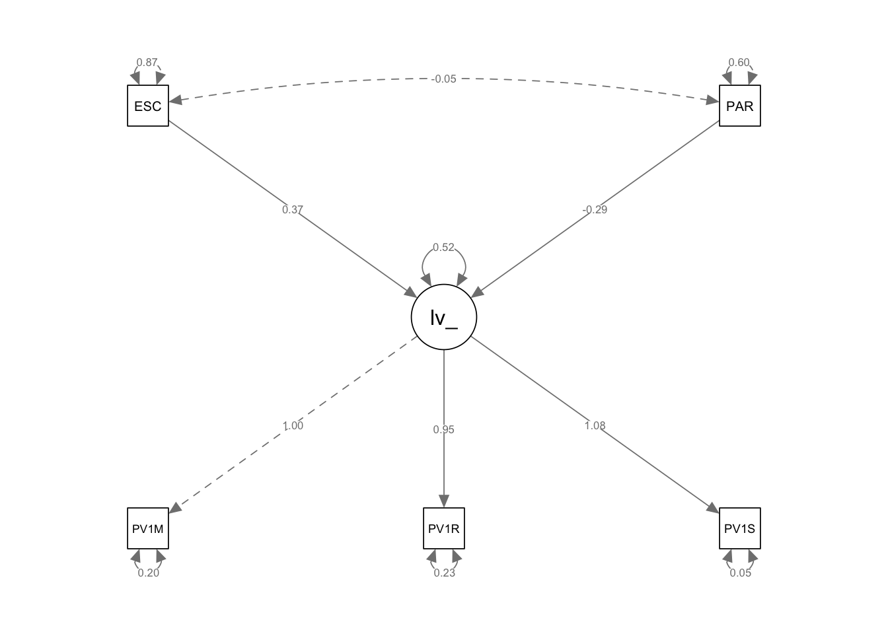
If we compare the model fit indices in the improved model to the original:
Fit measure
Model 1
Model 2
Improvement
Comment
χ²
11.835
3.884
↓ 7.951
Lower is better; Model 2 shows improved fit
CFI
0.999
1.000
↑ 0.001
Both indicate excellent fit
TLI
0.997
0.999
↑ 0.002
Both indicate excellent fit
RMSEA
0.028
0.020
↓ 0.008
Both indicate close fit; Model 2 is lower so better fit
The fit indicators, in general, suggest that adding the two covariance terms improves the model fit slightly.
Tip
If a model does not fit well, here is a general sequence of steps to try:
Overall fit poor? ↓ Check fit indicators: CFI/TLI/RMSEA/SRMR ↓ Investigate local misfit? ↓ Check standardised residuals ↓ Specific missing relationships in the model? ↓ Check modification indices ↓ Does the suggested change make theoretical sense? ↓ Revise model and refit
Tip
Here are some common problems with models and lavaan errors and suggestions of next steps
lavaan error/warning
What it usually indicates
Next step
χ² significant
Evidence that the model-implied covariance matrix differs from the observed matrix. Very sensitive to large samples.
Check CFI, TLI, RMSEA and SRMR; inspect standardised residuals and modification indices.
High RMSEA
Poorer approximate fit.
Examine standardised residuals and modification indices; consider whether the model is misspecified.
Low CFI/TLI
The proposed model does not improve sufficiently over the baseline model.
Inspect modification indices, residuals and the measurement model.
High SRMR
Large discrepancies between observed and model-implied correlations/covariances.
Inspect standardised residuals to identify problematic relationships.
Large standardised residuals (e.g. > ±2)
Specific observed relationships are poorly reproduced by the model.
Identify the variable pairs involved and consider whether an omitted path/residual covariance is theoretically justified.
Large modification index
Adding a parameter could improve model fit.
Check whether the suggested parameter makes theoretical sense before adding it.
Negative observed-variable variance
Heywood case; the model estimates an impossible negative residual variance.
Check standardised loadings, indicator correlations and factor specification; reconsider the measurement model.
Latent correlation > 1
The latent factors cannot be adequately distinguished; an inadmissible solution.
Check the factor correlations and loadings; reconsider whether the factors are empirically distinct.
“Covariance matrix of latent variables is not positive definite”
The estimated latent covariance matrix is mathematically invalid, often because of a correlation > ±1 or a negative latent variance.
Run lavInspect(fit, "cor.lv") and lavInspect(fit, "cov.lv"); investigate the problematic factors.
“Information matrix could not be inverted”
Standard errors cannot be calculated reliably; often indicates identification or severe estimation problems.
Check model identification, number of indicators, parameter constraints and possible redundant parameters.
Negative residual variance + SE
A parameter is significantly below zero rather than just being a tiny numerical issue.
Treat the model as inadmissible and revise the model rather than interpreting the parameter.
Very high factor loading (e.g. > 1)
Possible Heywood case or problems distinguishing the factor from an indicator.
Check residual variances and factor correlations; reconsider the indicators/factor structure.
1.7.1 Reporting the model
Once you have finalised your model, you will want to report various aspects of your SEM. Typically you will be interested in the factor loadings (the standardised coefficients representing the paths between variables). The loadings are displayed on your path diagram but you can produce an output of the loadings separately. For example for model2 above which attempts to model science scores with a latent home and cognitive item, you can extract the factor loadings using the standardizedsolution function.
# Report the modelmodel2 <-"lv_ach =~ PV1MATH + PV1READ + PV1SCIE lv_ach ~ ESCS + PARINVOL PV1MATH ~~ PV1READ PV1READ ~~ PV1SCIE"# Fit the modelfit <-sem(model2, data = Germany_data) # Extract loadingsstandardizedsolution(fit)
The output table gives you a list of the factor loadings between pairs of variables. For example, the first pair is the latent variable for achivement (lv_ach) and math score (PV1MATH). The loading estimate is given in the est.std column - 0.903 in this case. The columns ci.lower and ci.upper give the 95% confidence interval for the loading. The pvalue column returns the p-value for the loading. There is no well defined cut off in the literature, but if you have variables that have low loadings you may wish to reconsider their inclusion in the model.
Tip
There is disagreement in the literature as concerns the cut off for low factor loading. For example Hulland (1999) suggests adopting the value commonly used in factor analysis, < 0.4. By contrast, Fornell and Larcker (1981) recommend 0.7 and Chin (1998) prefers 0.707. Decisions will be field dependent so it is worth reading papers in your field to get a sense of the conventions in your discipline.
Another useful measure are the R2 values for each item in the model. Each item is treated as a dependent variable and an R2 value (the proportion of variance it explains) can be calculated using the parameterEstimates function. We then filter for the operator related to R2 and select the relevant columns to make the data easier to read. An arrange in descending order can also be useful.
The estimates here should be thought of as the percentage of variance of that item that is explained by the latent variable it is associated with.
# Extract R^2 values for the modelparameterEstimates(fit, rsquare =TRUE) %>%filter(op =="r2") %>%select(Item=rhs, R2 = est) %>%arrange(desc(R2))
For example, PV1SCIE in the model is associated with lv_ach, the achievement latent variable. Therefore the R2 value here indicates that 90.0% of the variance in PV1SCIE is explained by lv_ach.
1.8 Seminar activities
1.8.1 Task 1 - clean a data set and test assumptions for confirmatory factor analysis
You are planning to build a measurement model based on these items in the Dominican Republic (which as low missingness) related to childhood experiences of science as reported by parents:
Variable
Item
PA002Q06NA
Construction play, e.g. Lego bricks
PA002Q07NA
Took apart technical devices
PA002Q08NA
Fixed broken objects or items, e.g. broken electronic toys
PA002Q09NA
Experimented with a science kit, electronics kit, or chemistry set; used a microscope or telescope
PA002Q10NA
Played computer games with a science content
PA002Q11DA
Observed animal behaviour (e.g. bird watching)
PA002Q12DA
Participated in gardening activities
PA002Q13DA
Visited a science museum
Create a cleaned data set in which you have recoded the items to numeric. The check missingness, item distributions, correlations and run a KMO and Bartlett test. Reflect on the meaning of outcomes for your analysis.
Hint - here is a list of tasks - Do copy and paste code from above - 1. Create a data frame - 2. Filter for data from the Dominican Republic” - 3. Recode the levels - 4. Convert to ordered - 5. Check missingness - 6. Check item distributions - 7. Check correlations - 8. Run KMO and Bartlett tests
Answer
# create a data frame# filter for Dominican Republic"# select items# recode# convert to orderdchildhood_exp <- PISA_2025 %>%filter(CNT =="Dominican Republic") %>%select(PA002Q06NA, PA002Q07NA,PA002Q08NA, PA002Q09NA, PA002Q10NA, PA002Q11DA, PA002Q12DA, PA002Q13DA) %>%mutate(across(starts_with("PA002"),~case_when( . =="Very often"~3, . =="Regularly"~2, . =="Sometimes"~1, . =="Never"~0,TRUE~NA_real_))) %>%mutate(across(starts_with("PA"), as.ordered))# check missingnesschildhood_exp %>%select(where(is.ordered)) %>%summarise(across(starts_with("PA"), ~mean(is.na(.x)))) # max missing across items is 5.14% in PA002Q13DA which is good for a survey.# check item distributionslong_data <- childhood_exp %>%select(where(is.ordered)) %>%pivot_longer(cols =everything(), names_to ="item", values_to ="score")ggplot(long_data, aes(x = score, fill = item)) +geom_bar() +theme_minimal() +facet_wrap(~ item)# generally well distributed - perhaps some zero inflation in PA002Q12DA and PA002Q13DA (in 0 and 1) - but nothing too troubling here # check correlationspoly_matrix_lav <-lavCor(object = childhood_exp %>%select(starts_with("PA002")), ordered =TRUE, missing ="pairwise") # Inspect the matrixround(poly_matrix_lav, 2) # convert to list and sort for pairs under 0.3low_cor_list <- poly_matrix_lav %>%as.data.frame() %>%rownames_to_column(var ="item1") %>%pivot_longer(-item1, names_to ="item2", values_to ="r") %>%filter(item1 < item2) %>%filter(abs(r) <0.30) %>%arrange(abs(r)) low_cor_listitem_1_counts <- low_cor_list %>%group_by(item1) %>%count() %>%arrange(desc(n))item_2_counts <- low_cor_list %>%group_by(item2) %>%count() %>%arrange(desc(n))total_counts <-left_join(item_1_counts, item_2_counts, by =c("item1"="item2")) %>%mutate(n.x =as.numeric(n.x),n.y =as.numeric(n.y)) %>%mutate(n_tot =coalesce(n.x, 0) +coalesce(n.y, 0)) %>%select(item1, n_tot) %>%arrange(desc(n_tot)) total_counts# the highest item here PA002Q07NA only appears in 3 pairs so not too much to worry about# check KMO and BartlettKMO(poly_matrix_lav)# lowest item here is 0.74 which is middling /good - 6/8 are over 80 - and are goodcortest.bartlett(poly_matrix_lav, n =nrow(science_capital))# with large sample, it is unsurprising to have a p-value = 0, we can rely on the KMO
1.8.2 Task 2 - create a measurement model for resilience
There are a number of items on that probe resilience
Item
Description
ST307Q01JA
To what extent do you agree or disagree with the following statements? - I keep working on a task until it is finished
ST307Q02JA
To what extent do you agree or disagree with the following statements? - I apply additional effort when work becomes challenging
ST307Q03JA
To what extent do you agree or disagree with the following statements? - I finish tasks that I started even when they become boring
ST307Q09JA
To what extent do you agree or disagree with the following statements? - I finish what I start
All items are measure on a scale: “strongly agree”, “agree”, “neither agree or disagree” ,“disagree”, “strongly disagree”.
Perform a confirmatory factor analysis to construct a latent variable determined and evaluate the fit of the model.
Answer
# create a data frameresilience <- PISA_2025 %>%select(ST307Q01JA, ST307Q02JA, ST307Q03JA, ST307Q09JA)# recode to numeric resilience <- resilience %>%mutate(across(everything(), ~case_when( .x =="Strongly disagree"~1, .x =="Disagree"~2, .x =="Agree"~3, .x =="Strongly agree"~4,TRUE~NA_real_)))# label as orderedresilience <- resilience %>%mutate(across(everything(), ~ordered(.)))cfa_model <-" resilience =~ ST307Q01JA + ST307Q02JA + ST307Q03JA + ST307Q09JA"# fit the model fit_cfa <-cfa(cfa_model,data = resilience,estimator ="WLSMV",ordered =names(resilience))summary(fit_cfa, fit.measures =TRUE, standardized =TRUE)# This is a strong unidimensional model. # All factor loadings are strong 0.835 to 0.916.# Excellent model fit indices # Robust CFI (0.993) and Robust TLI (0.979): exceed the standard cutoff threshold of ≥0.95.# SRMR (0.012): Extremely low residual variance, comfortably under the ≤0.08 threshold.# While the Robust RMSEA is 0.107, this is a known statistical artifact of small models - can ignore
1.8.3 Task 3 - a measurement model of curiosity
There are a number of items that probe students’ curiosity. Use a confirmatory factor analysis to create a ’curiosity` scale.
Item
Description
ST301Q01JA
To what extent do you agree or disagree with the following statements? - I am curious about many different things
ST301Q04JA
To what extent do you agree or disagree with the following statements? - I like to know how things work
ST301Q06JA
To what extent do you agree or disagree with the following statements? - I am more curious than most people I know
ST301Q10JA
To what extent do you agree or disagree with the following statements? - I like learning new things
ST435Q01DA
To what extent do you agree or disagree with the following statements? - I enjoy finding solutions to problems.
All items are measure on a scale: “strongly agree”, “agree”, “neither agree or disagree” ,“disagree”, “strongly disagree”.
Perform a confirmatory factor analysis to construct a latent variable curious and evaluate the fit of the model. For our purposes, use an na.omit to drop missing values.
Answer
# Create a data frame for curiosity scorescur_cols <-c("ST301Q01JA","ST301Q04JA","ST301Q06JA","ST301Q10JA","ST435Q01DA")curiosity <- PISA_2025 %>%select(cur_cols) # recode to numeric curiosity <- curiosity %>%mutate(across(everything(), ~case_when( .x =="Strongly disagree"~1, .x =="Disagree"~2, .x =="Agree"~3, .x =="Strongly agree"~4,TRUE~NA_real_))) %>%na.omit() # label as orderedcuriosity <- curiosity %>%mutate(across(everything(), ~ordered(.)))cfa_model <-" curious =~ ST301Q01JA + ST301Q04JA + ST301Q06JA + ST301Q10JA + ST435Q01DA"# fit the model fit_cfa <-cfa(cfa_model,data = curiosity,estimator ="WLSMV",ordered =names(curiosity))summary(fit_cfa, fit.measures =TRUE, standardized =TRUE)# The robust CFI and TLI are over threshold of 0.95 (CFI = 0.994 and TLI =0.989). in general, the items look good - except for ST435Q01DA (which is understandable as it comes from a different construct!). A better model is:cur_cols <-c("ST301Q01JA","ST301Q04JA","ST301Q06JA","ST301Q10JA")curiosity <- PISA_2025 %>%select(cur_cols) # recode to numeric curiosity <- curiosity %>%mutate(across(everything(), ~case_when( .x =="Strongly disagree"~1, .x =="Disagree"~2, .x =="Agree"~3, .x =="Strongly agree"~4,TRUE~NA_real_))) %>%na.omit() # label as orderedcuriosity <- curiosity %>%mutate(across(everything(), ~ordered(.)))cfa_model <-" curious =~ ST301Q01JA + ST301Q04JA + ST301Q06JA + ST301Q10JA"# fit the model fit_cfa <-cfa(cfa_model,data = curiosity,estimator ="WLSMV",ordered =names(curiosity))summary(fit_cfa, fit.measures =TRUE, standardized =TRUE)# a good fit here, robust CFI = 0.997 and robust TLI 0.990. Good laodings on all four items 0.94-0.84.
1.8.4 Task 4 - a full model with measurement and structural elements
Create a full model, with a measurement and structural element. Use your latent variable for resilience from task 1 to model mathematics achievement (PV1MATH) - using resilience, social class (ESCS) and gender for students in the UK.
Hint: to enter a categorical variable like gender (ST004D01T) into the model it needs to be codded as 1 or 0.
Answer
resilience <- PISA_2025 %>%filter(CNT =="United Kingdom") %>%select(ST307Q01JA, ST307Q02JA, ST307Q03JA, ST307Q09JA, ESCS, ST004D01T, PV1MATH)# recode to numeric resilience <- resilience %>%mutate(across(starts_with("ST30"), ~case_when( .x =="Strongly disagree"~1, .x =="Disagree"~2, .x =="Agree"~3, .x =="Strongly agree"~4,TRUE~NA_real_))) %>%mutate(gender =case_when( ST004D01T %in%c("Female", "1") ~1, ST004D01T %in%c("Male", "2") ~0,TRUE~NA_real_ )) # label items as orderedresilience <- resilience %>%mutate(across(starts_with("ST30"), ~ordered(.)))model <-" resilience =~ ST307Q01JA + ST307Q02JA + ST307Q03JA + ST307Q09JAPV1MATH ~ resilience + ESCS + gender"fit_sem <-sem( model,data = resilience,estimator ="WLSMV",ordered =c("ST307Q01JA", "ST307Q02JA", "ST307Q03JA", "ST307Q09JA"))summary(fit_sem, fit.measures =TRUE, standardized =TRUE, rsquare =TRUE)semPaths(fit_sem, whatLabels ="std", rotation =2, sizeMan =10,sizeLat =10,label.cex =1.3,edge.label.cex =1,nCharNodes =0, residuals =FALSE, intercepts =FALSE,thresholds =FALSE)# The model fit here looks good CFI = 0.997; TLI = 0.997# The highest lading here is from social class, which has a standardized# residual of 0.3. A increase in 1 sd of social class leads to 30.7# more PISA points.#Resilience has the same size coefficients as gender# gender differences in the model are of a similar magnitude to # differences due to resilience. The combined model accounts for # 12.7% of the total variance in mathematics score.
1.8.5 Task 5 - a full model with two latent variables
Create a full model, with a measurement and structural element. Use your the latent variables for resilience and for curiosity from task 1 and task 2 to model science achievement (PV1SCIE) - using resilience, social class (ESCS) and gender for students in the UK.
Hint: to enter a categorical variable like gender (ST004D01T) into the model it needs to be codded as 1 or 0.
Answer
resil_curioisty <- PISA_2025 %>%filter(CNT =="United Kingdom") %>%select(ST307Q01JA, ST307Q02JA, ST307Q03JA, ST307Q09JA, ST301Q01JA, ST301Q04JA, ST301Q06JA,ST301Q10JA, ST435Q01DA, ESCS, ST004D01T, PV1SCIE)# recode to numeric resil_curioisty <- resil_curioisty %>%mutate(across(starts_with("ST30"), ~case_when( .x =="Strongly disagree"~1, .x =="Disagree"~2, .x =="Agree"~3, .x =="Strongly agree"~4,TRUE~NA_real_))) %>%mutate(gender =case_when( ST004D01T %in%c("Female", "1") ~1, ST004D01T %in%c("Male", "2") ~0,TRUE~NA_real_ )) # label items as orderedresil_curioisty <- resil_curioisty %>%mutate(across(starts_with("ST30"), ~ordered(.))) model <-" resilience =~ ST307Q01JA + ST307Q02JA + ST307Q03JA + ST307Q09JA curious =~ ST301Q01JA + ST301Q04JA + ST301Q06JA + ST301Q10JA + ST435Q01DAPV1SCIE ~ resilience + ESCS + gender"fit_sem <-sem( model,data = resil_curioisty,estimator ="WLSMV",ordered =c("ST307Q01JA", "ST307Q02JA", "ST307Q03JA", "ST307Q09JA","ST301Q01JA", "ST301Q04JA", "ST301Q06JA","ST301Q10JA","ST435Q01DA"))summary(fit_sem, fit.measures =TRUE, standardized =TRUE, rsquare =TRUE)semPaths(fit_sem, whatLabels ="std", rotation =2, sizeMan =10,sizeLat =10,label.cex =1.3,edge.label.cex =1,nCharNodes =0, residuals =FALSE, intercepts =FALSE,thresholds =FALSE)# The model fit here looks good CFI = 0.993; TLI = 0.993# Resilience and gender have very similar effects here# resilience 0.263 and ESCS 0.262. By comparison,# gender has a smaller effect of only -0.08# The negative sign suggests girls perform,# on average, slightly worse than boys# For the outcome variable, PV1SCIE,# the model explains 14.5% of total variance in science scores
1.8.6 Task 6 - Model improvements
Report the local fit of the model and discuss areas of better and worse fit.
Using the model you developed in task 6 use model modification indices to improve your model
Answer
# Starting from the model fit abovemodificationIndices(fit_sem, sort =TRUE)# The top three suggestions here are:# resilience =~ ST435Q01DA - item ST435Q01DA is "I enjoy finding solutions to problems." which cross loads between curiosity and resilience seems worth adding# The next suggestion resilience ~ PV1SCIE proposes science score causes resilience This seems unlikely from a theoretical point of view so can be rejected# ST435Q01DA ~~ PV1SCIE: Whilst this relationship seems intuitively correct - a covariance of enjoying finding solutions to problems and science scores - it violates a core assumption of the measurement model - the latent factor 'resilience' causes the maths score, not any of its items# resilience =~ ST301Q01JA is another cross loading - the curiosity item ("I am curious about many different things") loads on curiosity. Adding the crossloading with stop curiosity being a clean factor and soaks up some cariance from curiosity.
1.8.7 Task 6 - report factor loadings and R2 for your model
Write up your model. Take the model you fit in task 6 and write a paragraph describing the output, as you might for a journal article.
1.9 Further information
A good introduction to the lavaan package, which will support your understanding of SEM in R, can be found here lavaan
You may find Schumacker and Lomax’s (Schumacker and Lomax 2004) book, A beginner’s guide to structural equation modeling, a helpful introduction.
The package lavaangui provides functions to help to produce publication-ready path diagrams using a GUI interface See lavaangui for more details.
References
Archer, Louise, Emily Dawson, Jennifer DeWitt, Amy Seakins, and Billy Wong. 2015. “‘Science Capital’: A Conceptual, Methodological, and Empirical Argument for Extending Bourdieusian Notions of Capital Beyond the Arts.”Journal of Research in Science Teaching 52 (7): 922–48.
Chin, Wynne W. 1998. “The Partial Least Squares Approach to Structural Equation Modeling.”Modern Methods for Business Research/Lawrence Erlbaum Associates.
Fornell, Claes, and David F Larcker. 1981. “Evaluating Structural Equation Models with Unobservable Variables and Measurement Error.”Journal of Marketing Research 18 (1): 39–50.
Hair Jr, Joseph F, G Tomas M Hult, Christian M Ringle, Marko Sarstedt, Nicholas P Danks, and Soumya Ray. 2021. Partial Least Squares Structural Equation Modeling (PLS-SEM) Using r: A Workbook. Springer Nature.
Hoyle, Rick H. 2012. Handbook of Structural Equation Modeling. Guilford press.
Hulland, John. 1999. “Use of Partial Least Squares (PLS) in Strategic Management Research: A Review of Four Recent Studies.”Strategic Management Journal 20 (2): 195–204.
Kline, Rex B. 2023. Principles and Practice of Structural Equation Modeling. Guilford publications.
Lomax, Richard. 2013. “Introduction to Structural Equation Modeling.”Applied Quantitative Analysis in Education and the Social Sciences, 245–64.
McDonald, Roderick P, and Moon-Ho Ringo Ho. 2002. “Principles and Practice in Reporting Structural Equation Analyses.”Psychological Methods 7 (1): 64.
Nkansah, Bismark Kwao. 2018. “On the Kaiser-Meier-Olkin’s Measure of Sampling Adequacy.”Mathematical Theory and Modeling 8 (7): 52–76.
Rules, Some Decision. 1974. “When Is a Correlation Matrix Appropiate for Factor Analysis?”Psychological Bulletin 81 (6): 358–61.
Schumacker, Randall E, and Richard G Lomax. 2004. A Beginner’s Guide to Structural Equation Modeling. psychology press.